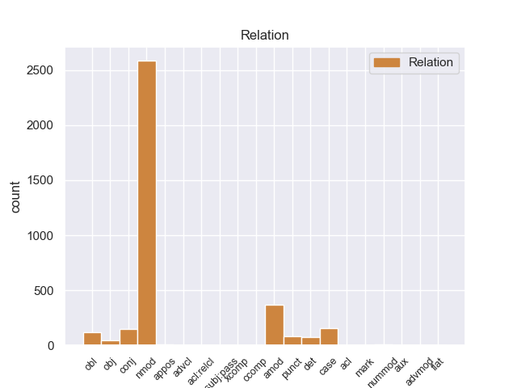
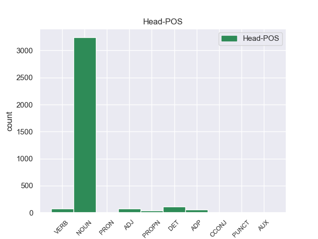
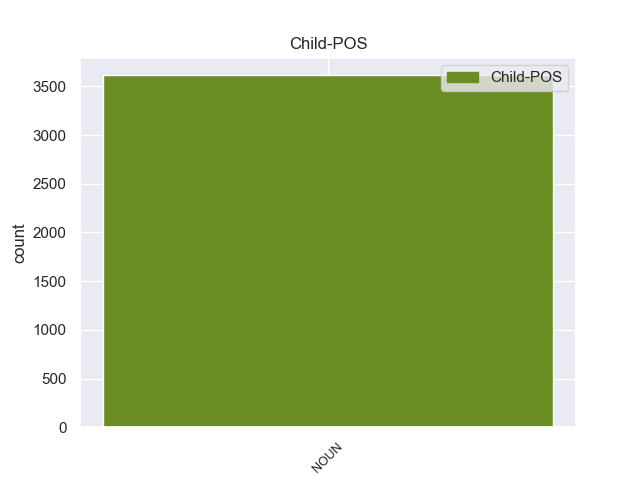

Distribution of features within this leaf



Agreement Rules sorted by frequency.
- When the dependent token is the nominal modifier(nmod) of the head token, and the head token is NOUN and the dependent token is NOUN.
1 A _ _ _ _ 0 _ _ _
2 continuación _ _ _ _ 0 _ _ _
3 , _ _ _ _ 0 _ _ _
4 sonarán _ _ _ _ 0 _ _ _
5 los _ _ _ _ 0 _ _ _
6 ritmos _ _ _ _ 0 _ _ _
7 más _ _ _ _ 0 _ _ _
8 intensos _ _ _ _ 0 _ _ _
9 de _ _ _ _ 0 _ _ _
10 los _ _ _ _ 0 _ _ _
11 llanos _ _ _ _ 0 _ _ _
12 interpretados _ _ _ _ 0 _ _ _
13 por _ _ _ _ 0 _ _ _
14 una _ _ _ _ 0 _ _ _
15 agrupación _ _ _ _ 0 _ _ _
16 que _ _ _ _ 0 _ _ _
17 romperá _ _ _ _ 0 _ _ _
18 esquemas _ _ _ _ 0 _ _ _
19 : _ _ _ _ 0 _ _ _
20 el _ _ _ _ 0 _ _ _
21 Ensamble _ _ _ _ 0 _ _ _
22 de _ _ _ _ 0 _ _ _
23 Arpas _ _ _ _ 0 _ _ _
24 de _ _ _ _ 0 _ _ _
25 la _ _ _ _ 0 _ _ _
26 Orquesta orquesta NOUN _ Gender=Fem|Number=Sing 0 _ _ _
27 de _ _ _ _ 0 _ _ _
28 Música _ _ _ _ 0 _ _ _
29 Popular _ _ _ _ 0 _ _ _
30 de _ _ _ _ 0 _ _ _
31 el _ _ _ _ 0 _ _ _
32 Estado _ _ _ _ 0 _ _ _
33 Guárico _ _ _ _ 0 _ _ _
34 , _ _ _ _ 0 _ _ _
35 integrado _ _ _ _ 0 _ _ _
36 por _ _ _ _ 0 _ _ _
37 14 _ _ _ _ 0 _ _ _
38 ejecutantes _ _ _ _ 0 _ _ _
39 , _ _ _ _ 0 _ _ _
40 todos _ _ _ _ 0 _ _ _
41 formados _ _ _ _ 0 _ _ _
42 por _ _ _ _ 0 _ _ _
43 El _ _ _ _ 0 _ _ _
44 Sistema _ _ _ _ 0 _ _ _
45 , _ _ _ _ 0 _ _ _
46 siendo _ _ _ _ 0 _ _ _
47 algunos _ _ _ _ 0 _ _ _
48 de _ _ _ _ 0 _ _ _
49 ellos _ _ _ _ 0 _ _ _
50 ganadores _ _ _ _ 0 _ _ _
51 de _ _ _ _ 0 _ _ _
52 el _ _ _ _ 0 _ _ _
53 reconocido _ _ _ _ 0 _ _ _
54 Festival _ _ _ _ 0 _ _ _
55 Internacional _ _ _ _ 0 _ _ _
56 de _ _ _ _ 0 _ _ _
57 Arpas _ _ _ _ 0 _ _ _
58 Infantil _ _ _ _ 0 _ _ _
59 y _ _ _ _ 0 _ _ _
60 Adultos _ _ _ _ 0 _ _ _
61 de _ _ _ _ 0 _ _ _
62 Villavicencio villavicencio NOUN _ Gender=Fem|Number=Sing 26 nmod _ _
63 , _ _ _ _ 0 _ _ _
64 Colombia _ _ _ _ 0 _ _ _
65 . _ _ _ _ 0 _ _ _
1 La _ _ _ _ 0 _ _ _
2 Diputación _ _ _ _ 0 _ _ _
3 de _ _ _ _ 0 _ _ _
4 Valencia _ _ _ _ 0 _ _ _
5 ha _ _ _ _ 0 _ _ _
6 decidido _ _ _ _ 0 _ _ _
7 dar _ _ _ _ 0 _ _ _
8 el _ _ _ _ 0 _ _ _
9 salto _ _ _ _ 0 _ _ _
10 a _ _ _ _ 0 _ _ _
11 las _ _ _ _ 0 _ _ _
12 redes _ _ _ _ 0 _ _ _
13 sociales _ _ _ _ 0 _ _ _
14 y _ _ _ _ 0 _ _ _
15 cuenta _ _ _ _ 0 _ _ _
16 , _ _ _ _ 0 _ _ _
17 a _ _ _ _ 0 _ _ _
18 partir _ _ _ _ 0 _ _ _
19 de _ _ _ _ 0 _ _ _
20 hoy _ _ _ _ 0 _ _ _
21 , _ _ _ _ 0 _ _ _
22 con _ _ _ _ 0 _ _ _
23 un _ _ _ _ 0 _ _ _
24 blog _ _ _ _ 0 _ _ _
25 y _ _ _ _ 0 _ _ _
26 un _ _ _ _ 0 _ _ _
27 perfil _ _ _ _ 0 _ _ _
28 propio _ _ _ _ 0 _ _ _
29 en _ _ _ _ 0 _ _ _
30 las _ _ _ _ 0 _ _ _
31 principales _ _ _ _ 0 _ _ _
32 redes _ _ _ _ 0 _ _ _
33 sociales _ _ _ _ 0 _ _ _
34 , _ _ _ _ 0 _ _ _
35 con _ _ _ _ 0 _ _ _
36 los _ _ _ _ 0 _ _ _
37 que _ _ _ _ 0 _ _ _
38 pretende _ _ _ _ 0 _ _ _
39 establecer _ _ _ _ 0 _ _ _
40 una _ _ _ _ 0 _ _ _
41 comunicación comunicación NOUN _ Gender=Fem|Number=Sing 0 _ _ _
42 directa directa NOUN _ Gender=Fem|Number=Sing 41 amod _ _
43 con _ _ _ _ 0 _ _ _
44 los _ _ _ _ 0 _ _ _
45 ciudadanos _ _ _ _ 0 _ _ _
46 . _ _ _ _ 0 _ _ _
1 La _ _ _ _ 0 _ _ _
2 ceriflor ceriflor NOUN _ Gender=Masc|Number=Sing 11 case _ _
3 o _ _ _ _ 0 _ _ _
4 palomera _ _ _ _ 0 _ _ _
5 ( _ _ _ _ 0 _ _ _
6 Cerinthe _ _ _ _ 0 _ _ _
7 major _ _ _ _ 0 _ _ _
8 ) _ _ _ _ 0 _ _ _
9 es _ _ _ _ 0 _ _ _
10 una _ _ _ _ 0 _ _ _
11 planta planta NOUN _ Gender=Fem|Number=Sing 0 _ _ _
12 de _ _ _ _ 0 _ _ _
13 la _ _ _ _ 0 _ _ _
14 familia _ _ _ _ 0 _ _ _
15 de _ _ _ _ 0 _ _ _
16 las _ _ _ _ 0 _ _ _
17 boragináceas _ _ _ _ 0 _ _ _
18 . _ _ _ _ 0 _ _ _
1 En _ _ _ _ 0 _ _ _
2 este _ _ _ _ 0 _ _ _
3 poemario _ _ _ _ 0 _ _ _
4 místico _ _ _ _ 0 _ _ _
5 y _ _ _ _ 0 _ _ _
6 nocturno nocturno NOUN _ Gender=Masc|Number=Sing 30 conj _ _
7 se _ _ _ _ 0 _ _ _
8 canta _ _ _ _ 0 _ _ _
9 a _ _ _ _ 0 _ _ _
10 la _ _ _ _ 0 _ _ _
11 muerte _ _ _ _ 0 _ _ _
12 y _ _ _ _ 0 _ _ _
13 se _ _ _ _ 0 _ _ _
14 identifica _ _ _ _ 0 _ _ _
15 a _ _ _ _ 0 _ _ _
16 la _ _ _ _ 0 _ _ _
17 amada _ _ _ _ 0 _ _ _
18 con _ _ _ _ 0 _ _ _
19 los _ _ _ _ 0 _ _ _
20 misterios _ _ _ _ 0 _ _ _
21 de _ _ _ _ 0 _ _ _
22 el _ _ _ _ 0 _ _ _
23 cristianismo _ _ _ _ 0 _ _ _
24 , _ _ _ _ 0 _ _ _
25 y _ _ _ _ 0 _ _ _
26 el _ _ _ _ 0 _ _ _
27 misticismo _ _ _ _ 0 _ _ _
28 de _ _ _ _ 0 _ _ _
29 el _ _ _ _ 0 _ _ _
30 viaje viaje NOUN _ Gender=Masc|Number=Sing 0 _ _ _
31 de _ _ _ _ 0 _ _ _
32 la _ _ _ _ 0 _ _ _
33 prometida _ _ _ _ 0 _ _ _
34 muerta _ _ _ _ 0 _ _ _
35 por _ _ _ _ 0 _ _ _
36 las _ _ _ _ 0 _ _ _
37 regiones _ _ _ _ 0 _ _ _
38 de _ _ _ _ 0 _ _ _
39 la _ _ _ _ 0 _ _ _
40 oscuridad _ _ _ _ 0 _ _ _
41 se _ _ _ _ 0 _ _ _
42 hace _ _ _ _ 0 _ _ _
43 patente _ _ _ _ 0 _ _ _
44 a _ _ _ _ 0 _ _ _
45 el _ _ _ _ 0 _ _ _
46 fundir _ _ _ _ 0 _ _ _
47 la _ _ _ _ 0 _ _ _
48 persona _ _ _ _ 0 _ _ _
49 de _ _ _ _ 0 _ _ _
50 la _ _ _ _ 0 _ _ _
51 amada _ _ _ _ 0 _ _ _
52 con _ _ _ _ 0 _ _ _
53 las _ _ _ _ 0 _ _ _
54 personas _ _ _ _ 0 _ _ _
55 de _ _ _ _ 0 _ _ _
56 la _ _ _ _ 0 _ _ _
57 Trinidad _ _ _ _ 0 _ _ _
58 cristiana _ _ _ _ 0 _ _ _
59 . _ _ _ _ 0 _ _ _
1 El _ _ _ _ 0 _ _ _
2 actual _ _ _ _ 0 _ _ _
3 escudo _ _ _ _ 0 _ _ _
4 está _ _ _ _ 0 _ _ _
5 formado formado DET _ Gender=Masc|Number=Sing 0 _ _ _
6 por _ _ _ _ 0 _ _ _
7 dos _ _ _ _ 0 _ _ _
8 círculos _ _ _ _ 0 _ _ _
9 concéntricos _ _ _ _ 0 _ _ _
10 con _ _ _ _ 0 _ _ _
11 la _ _ _ _ 0 _ _ _
12 leyenda _ _ _ _ 0 _ _ _
13 GIRONA _ _ _ _ 0 _ _ _
14 FC _ _ _ _ 0 _ _ _
15 en _ _ _ _ 0 _ _ _
16 blanco _ _ _ _ 0 _ _ _
17 sobre _ _ _ _ 0 _ _ _
18 fondo _ _ _ _ 0 _ _ _
19 rojo _ _ _ _ 0 _ _ _
20 , _ _ _ _ 0 _ _ _
21 el _ _ _ _ 0 _ _ _
22 círculo círculo NOUN _ Gender=Masc|Number=Sing 5 nmod _ _
23 interior _ _ _ _ 0 _ _ _
24 esta _ _ _ _ 0 _ _ _
25 cruzado _ _ _ _ 0 _ _ _
26 por _ _ _ _ 0 _ _ _
27 19 _ _ _ _ 0 _ _ _
28 franjas _ _ _ _ 0 _ _ _
29 , _ _ _ _ 0 _ _ _
30 10 _ _ _ _ 0 _ _ _
31 blancas _ _ _ _ 0 _ _ _
32 y _ _ _ _ 0 _ _ _
33 9 _ _ _ _ 0 _ _ _
34 rojas _ _ _ _ 0 _ _ _
35 portando _ _ _ _ 0 _ _ _
36 un _ _ _ _ 0 _ _ _
37 blasón _ _ _ _ 0 _ _ _
38 lonsanjado _ _ _ _ 0 _ _ _
39 de _ _ _ _ 0 _ _ _
40 oro _ _ _ _ 0 _ _ _
41 con _ _ _ _ 0 _ _ _
42 cuatro _ _ _ _ 0 _ _ _
43 palos _ _ _ _ 0 _ _ _
44 verticales _ _ _ _ 0 _ _ _
45 gules _ _ _ _ 0 _ _ _
46 y _ _ _ _ 0 _ _ _
47 escusón _ _ _ _ 0 _ _ _
48 central _ _ _ _ 0 _ _ _
49 cuadrilongo _ _ _ _ 0 _ _ _
50 ibérico _ _ _ _ 0 _ _ _
51 verado _ _ _ _ 0 _ _ _
52 de _ _ _ _ 0 _ _ _
53 ondas _ _ _ _ 0 _ _ _
54 rojas _ _ _ _ 0 _ _ _
55 y _ _ _ _ 0 _ _ _
56 blancas _ _ _ _ 0 _ _ _
57 . _ _ _ _ 0 _ _ _
1 Hace _ _ _ _ 0 _ _ _
2 aproximadamente _ _ _ _ 0 _ _ _
3 un _ _ _ _ 0 _ _ _
4 año _ _ _ _ 0 _ _ _
5 que _ _ _ _ 0 _ _ _
6 Niscayah _ _ _ _ 0 _ _ _
7 decidió _ _ _ _ 0 _ _ _
8 realizar _ _ _ _ 0 _ _ _
9 un _ _ _ _ 0 _ _ _
10 cambio _ _ _ _ 0 _ _ _
11 estratégico estratégico NOUN _ Gender=Fem|Number=Sing 13 punct _ _
12 para _ _ _ _ 0 _ _ _
13 convertir convertir NOUN _ Gender=Masc|Number=Sing 0 _ _ _
14 a _ _ _ _ 0 _ _ _
15 el _ _ _ _ 0 _ _ _
16 cliente _ _ _ _ 0 _ _ _
17 en _ _ _ _ 0 _ _ _
18 su _ _ _ _ 0 _ _ _
19 núcleo _ _ _ _ 0 _ _ _
20 y _ _ _ _ 0 _ _ _
21 , _ _ _ _ 0 _ _ _
22 consecuencia _ _ _ _ 0 _ _ _
23 de _ _ _ _ 0 _ _ _
24 éste _ _ _ _ 0 _ _ _
25 , _ _ _ _ 0 _ _ _
26 un _ _ _ _ 0 _ _ _
27 cambio _ _ _ _ 0 _ _ _
28 de _ _ _ _ 0 _ _ _
29 estructura _ _ _ _ 0 _ _ _
30 , _ _ _ _ 0 _ _ _
31 pasando _ _ _ _ 0 _ _ _
32 de _ _ _ _ 0 _ _ _
33 una _ _ _ _ 0 _ _ _
34 división _ _ _ _ 0 _ _ _
35 funcional _ _ _ _ 0 _ _ _
36 a _ _ _ _ 0 _ _ _
37 una _ _ _ _ 0 _ _ _
38 matricial _ _ _ _ 0 _ _ _
39 . _ _ _ _ 0 _ _ _
1 La _ _ _ _ 0 _ _ _
2 dirigente _ _ _ _ 0 _ _ _
3 socialdemócrata _ _ _ _ 0 _ _ _
4 dijo _ _ _ _ 0 _ _ _
5 que _ _ _ _ 0 _ _ _
6 su _ _ _ _ 0 _ _ _
7 partido _ _ _ _ 0 _ _ _
8 está _ _ _ _ 0 _ _ _
9 promoviendo _ _ _ _ 0 _ _ _
10 una _ _ _ _ 0 _ _ _
11 Ley _ _ _ _ 0 _ _ _
12 que _ _ _ _ 0 _ _ _
13 obligue _ _ _ _ 0 _ _ _
14 a _ _ _ _ 0 _ _ _
15 todas _ _ _ _ 0 _ _ _
16 las _ _ _ _ 0 _ _ _
17 instituciones _ _ _ _ 0 _ _ _
18 de _ _ _ _ 0 _ _ _
19 el _ _ _ _ 0 _ _ _
20 Estado _ _ _ _ 0 _ _ _
21 a _ _ _ _ 0 _ _ _
22 efectuar _ _ _ _ 0 _ _ _
23 sus _ _ _ _ 0 _ _ _
24 compras _ _ _ _ 0 _ _ _
25 de _ _ _ _ 0 _ _ _
26 manera manera NOUN _ Gender=Fem|Number=Sing 87 det _ _
27 pública _ _ _ _ 0 _ _ _
28 por _ _ _ _ 0 _ _ _
29 internet _ _ _ _ 0 _ _ _
30 , _ _ _ _ 0 _ _ _
31 ya _ _ _ _ 0 _ _ _
32 que _ _ _ _ 0 _ _ _
33 en _ _ _ _ 0 _ _ _
34 la _ _ _ _ 0 _ _ _
35 actualidad _ _ _ _ 0 _ _ _
36 ello _ _ _ _ 0 _ _ _
37 es _ _ _ _ 0 _ _ _
38 posible _ _ _ _ 0 _ _ _
39 técnicamente _ _ _ _ 0 _ _ _
40 , _ _ _ _ 0 _ _ _
41 para _ _ _ _ 0 _ _ _
42 que _ _ _ _ 0 _ _ _
43 los _ _ _ _ 0 _ _ _
44 procesos _ _ _ _ 0 _ _ _
45 de _ _ _ _ 0 _ _ _
46 adquisición _ _ _ _ 0 _ _ _
47 se _ _ _ _ 0 _ _ _
48 realicen _ _ _ _ 0 _ _ _
49 a _ _ _ _ 0 _ _ _
50 la _ _ _ _ 0 _ _ _
51 vista _ _ _ _ 0 _ _ _
52 de _ _ _ _ 0 _ _ _
53 el _ _ _ _ 0 _ _ _
54 ciudadano _ _ _ _ 0 _ _ _
55 , _ _ _ _ 0 _ _ _
56 garantizando _ _ _ _ 0 _ _ _
57 así _ _ _ _ 0 _ _ _
58 su _ _ _ _ 0 _ _ _
59 transparencia _ _ _ _ 0 _ _ _
60 , _ _ _ _ 0 _ _ _
61 lo _ _ _ _ 0 _ _ _
62 que _ _ _ _ 0 _ _ _
63 permitirá _ _ _ _ 0 _ _ _
64 una _ _ _ _ 0 _ _ _
65 efectiva _ _ _ _ 0 _ _ _
66 contraloría _ _ _ _ 0 _ _ _
67 social _ _ _ _ 0 _ _ _
68 que _ _ _ _ 0 _ _ _
69 avale _ _ _ _ 0 _ _ _
70 la _ _ _ _ 0 _ _ _
71 honestidad _ _ _ _ 0 _ _ _
72 de _ _ _ _ 0 _ _ _
73 los _ _ _ _ 0 _ _ _
74 procesos _ _ _ _ 0 _ _ _
75 de _ _ _ _ 0 _ _ _
76 compras _ _ _ _ 0 _ _ _
77 a _ _ _ _ 0 _ _ _
78 el _ _ _ _ 0 _ _ _
79 evitar _ _ _ _ 0 _ _ _
80 la _ _ _ _ 0 _ _ _
81 intermediación _ _ _ _ 0 _ _ _
82 , _ _ _ _ 0 _ _ _
83 es _ _ _ _ 0 _ _ _
84 decir _ _ _ _ 0 _ _ _
85 , _ _ _ _ 0 _ _ _
86 el _ _ _ _ 0 _ _ _
87 encuentro encuentro NOUN _ Gender=Masc|Number=Sing 0 _ _ _
88 cara _ _ _ _ 0 _ _ _
89 a _ _ _ _ 0 _ _ _
90 cara _ _ _ _ 0 _ _ _
91 entre _ _ _ _ 0 _ _ _
92 el _ _ _ _ 0 _ _ _
93 vendedor _ _ _ _ 0 _ _ _
94 y _ _ _ _ 0 _ _ _
95 el _ _ _ _ 0 _ _ _
96 comprador _ _ _ _ 0 _ _ _
97 , _ _ _ _ 0 _ _ _
98 que _ _ _ _ 0 _ _ _
99 es _ _ _ _ 0 _ _ _
100 un _ _ _ _ 0 _ _ _
101 mecanismo _ _ _ _ 0 _ _ _
102 que _ _ _ _ 0 _ _ _
103 facilita _ _ _ _ 0 _ _ _
104 la _ _ _ _ 0 _ _ _
105 corrupción _ _ _ _ 0 _ _ _
106 a _ _ _ _ 0 _ _ _
107 el _ _ _ _ 0 _ _ _
108 poner _ _ _ _ 0 _ _ _
109 en _ _ _ _ 0 _ _ _
110 manos _ _ _ _ 0 _ _ _
111 de _ _ _ _ 0 _ _ _
112 algunos _ _ _ _ 0 _ _ _
113 funcionarios _ _ _ _ 0 _ _ _
114 inescrupulosos _ _ _ _ 0 _ _ _
115 el _ _ _ _ 0 _ _ _
116 poder _ _ _ _ 0 _ _ _
117 discrecional _ _ _ _ 0 _ _ _
118 de _ _ _ _ 0 _ _ _
119 adquirir _ _ _ _ 0 _ _ _
120 lo _ _ _ _ 0 _ _ _
121 bienes _ _ _ _ 0 _ _ _
122 y _ _ _ _ 0 _ _ _
123 servicios _ _ _ _ 0 _ _ _
124 que _ _ _ _ 0 _ _ _
125 los _ _ _ _ 0 _ _ _
126 organismos _ _ _ _ 0 _ _ _
127 públicos _ _ _ _ 0 _ _ _
128 requieren _ _ _ _ 0 _ _ _
129 . _ _ _ _ 0 _ _ _
1 El _ _ _ _ 0 _ _ _
2 producto _ _ _ _ 0 _ _ _
3 estrella _ _ _ _ 0 _ _ _
4 de _ _ _ _ 0 _ _ _
5 el _ _ _ _ 0 _ _ _
6 lujoso _ _ _ _ 0 _ _ _
7 Haikko _ _ _ _ 0 _ _ _
8 Spa _ _ _ _ 0 _ _ _
9 , _ _ _ _ 0 _ _ _
10 situado _ _ _ _ 0 _ _ _
11 en _ _ _ _ 0 _ _ _
12 la _ _ _ _ 0 _ _ _
13 localidad _ _ _ _ 0 _ _ _
14 de _ _ _ _ 0 _ _ _
15 Porvoo _ _ _ _ 0 _ _ _
16 , _ _ _ _ 0 _ _ _
17 es _ _ _ _ 0 _ _ _
18 la _ _ _ _ 0 _ _ _
19 terapia _ _ _ _ 0 _ _ _
20 Cryo _ _ _ _ 0 _ _ _
21 : _ _ _ _ 0 _ _ _
22 el _ _ _ _ 0 _ _ _
23 cuerpo _ _ _ _ 0 _ _ _
24 se _ _ _ _ 0 _ _ _
25 somete somete NOUN _ Gender=Masc|Number=Sing 0 _ _ _
26 durante _ _ _ _ 0 _ _ _
27 los _ _ _ _ 0 _ _ _
28 primeros _ _ _ _ 0 _ _ _
29 minutos _ _ _ _ 0 _ _ _
30 a _ _ _ _ 0 _ _ _
31 temperaturas _ _ _ _ 0 _ _ _
32 de _ _ _ _ 0 _ _ _
33 -- _ _ _ _ 0 _ _ _
34 30 _ _ _ _ 0 _ _ _
35 y _ _ _ _ 0 _ _ _
36 -- _ _ _ _ 0 _ _ _
37 60 _ _ _ _ 0 _ _ _
38 º _ _ _ _ 0 _ _ _
39 C _ _ _ _ 0 _ _ _
40 en _ _ _ _ 0 _ _ _
41 las _ _ _ _ 0 _ _ _
42 salas _ _ _ _ 0 _ _ _
43 aisladas _ _ _ _ 0 _ _ _
44 antes _ _ _ _ 0 _ _ _
45 de _ _ _ _ 0 _ _ _
46 exponer _ _ _ _ 0 _ _ _
47 se _ _ _ _ 0 _ _ _
48 a _ _ _ _ 0 _ _ _
49 el _ _ _ _ 0 _ _ _
50 tratamiento _ _ _ _ 0 _ _ _
51 de _ _ _ _ 0 _ _ _
52 frío _ _ _ _ 0 _ _ _
53 a _ _ _ _ 0 _ _ _
54 -110 _ _ _ _ 0 _ _ _
55 º _ _ _ _ 0 _ _ _
56 C. _ _ _ _ 0 _ _ _
57 Desde _ _ _ _ 0 _ _ _
58 la _ _ _ _ 0 _ _ _
59 primera _ _ _ _ 0 _ _ _
60 sesión sesión NOUN _ Gender=Fem|Number=Sing 25 obl _ _
61 se _ _ _ _ 0 _ _ _
62 percibe _ _ _ _ 0 _ _ _
63 el _ _ _ _ 0 _ _ _
64 aporte _ _ _ _ 0 _ _ _
65 de _ _ _ _ 0 _ _ _
66 energía _ _ _ _ 0 _ _ _
67 resultado _ _ _ _ 0 _ _ _
68 de _ _ _ _ 0 _ _ _
69 la _ _ _ _ 0 _ _ _
70 reducción _ _ _ _ 0 _ _ _
71 de _ _ _ _ 0 _ _ _
72 tensión _ _ _ _ 0 _ _ _
73 muscular _ _ _ _ 0 _ _ _
74 y _ _ _ _ 0 _ _ _
75 el _ _ _ _ 0 _ _ _
76 alivio _ _ _ _ 0 _ _ _
77 de _ _ _ _ 0 _ _ _
78 dolores _ _ _ _ 0 _ _ _
79 y _ _ _ _ 0 _ _ _
80 enfermedades _ _ _ _ 0 _ _ _
81 . _ _ _ _ 0 _ _ _
1 El _ _ _ _ 0 _ _ _
2 Kindle _ _ _ _ 0 _ _ _
3 DX _ _ _ _ 0 _ _ _
4 se _ _ _ _ 0 _ _ _
5 vende _ _ _ _ 0 _ _ _
6 a _ _ _ _ 0 _ _ _
7 489 _ _ _ _ 0 _ _ _
8 dólares _ _ _ _ 0 _ _ _
9 tanto _ _ _ _ 0 _ _ _
10 en _ _ _ _ 0 _ _ _
11 el _ _ _ _ 0 _ _ _
12 mercado _ _ _ _ 0 _ _ _
13 internacional _ _ _ _ 0 _ _ _
14 como _ _ _ _ 0 _ _ _
15 en _ _ _ _ 0 _ _ _
16 Estados _ _ _ _ 0 _ _ _
17 Unidos _ _ _ _ 0 _ _ _
18 ( _ _ _ _ 0 _ _ _
19 contra _ _ _ _ 0 _ _ _
20 259 _ _ _ _ 0 _ _ _
21 dólares _ _ _ _ 0 _ _ _
22 el _ _ _ _ 0 _ _ _
23 Kindle kindle ADJ _ Gender=Masc|Number=Sing 0 _ _ _
24 clásico clásico NOUN _ Gender=Masc|Number=Sing 23 nmod _ _
25 ) _ _ _ _ 0 _ _ _
26 a _ _ _ _ 0 _ _ _
27 partir _ _ _ _ 0 _ _ _
28 de _ _ _ _ 0 _ _ _
29 hoy _ _ _ _ 0 _ _ _
30 y _ _ _ _ 0 _ _ _
31 para _ _ _ _ 0 _ _ _
32 entrega _ _ _ _ 0 _ _ _
33 a _ _ _ _ 0 _ _ _
34 partir _ _ _ _ 0 _ _ _
35 de _ _ _ _ 0 _ _ _
36 el _ _ _ _ 0 _ _ _
37 19 _ _ _ _ 0 _ _ _
38 de _ _ _ _ 0 _ _ _
39 enero _ _ _ _ 0 _ _ _
40 . _ _ _ _ 0 _ _ _
1 Para _ _ _ _ 0 _ _ _
2 el _ _ _ _ 0 _ _ _
3 caso _ _ _ _ 0 _ _ _
4 , _ _ _ _ 0 _ _ _
5 vale _ _ _ _ 0 _ _ _
6 la _ _ _ _ 0 _ _ _
7 pena _ _ _ _ 0 _ _ _
8 ir ir ADP _ Gender=Masc|Number=Sing 0 _ _ _
9 a _ _ _ _ 0 _ _ _
10 un _ _ _ _ 0 _ _ _
11 McDonals _ _ _ _ 0 _ _ _
12 , _ _ _ _ 0 _ _ _
13 como _ _ _ _ 0 _ _ _
14 mínimo _ _ _ _ 0 _ _ _
15 estos _ _ _ _ 0 _ _ _
16 no _ _ _ _ 0 _ _ _
17 engañan _ _ _ _ 0 _ _ _
18 a _ _ _ _ 0 _ _ _
19 nadie nadie NOUN _ Gender=Masc|Number=Sing 8 nmod _ _
20 y _ _ _ _ 0 _ _ _
21 sabes _ _ _ _ 0 _ _ _
22 que _ _ _ _ 0 _ _ _
23 vas _ _ _ _ 0 _ _ _
24 a _ _ _ _ 0 _ _ _
25 comer _ _ _ _ 0 _ _ _
26 fastfood _ _ _ _ 0 _ _ _
27 , _ _ _ _ 0 _ _ _
28 y _ _ _ _ 0 _ _ _
29 seguramente _ _ _ _ 0 _ _ _
30 estará _ _ _ _ 0 _ _ _
31 igual _ _ _ _ 0 _ _ _
32 de _ _ _ _ 0 _ _ _
33 bien _ _ _ _ 0 _ _ _
34 situado _ _ _ _ 0 _ _ _
35 . _ _ _ _ 0 _ _ _
1 Ronny _ _ _ _ 0 _ _ _
2 Blaschke _ _ _ _ 0 _ _ _
3 es _ _ _ _ 0 _ _ _
4 un _ _ _ _ 0 _ _ _
5 periodista _ _ _ _ 0 _ _ _
6 " _ _ _ _ 0 _ _ _
7 free _ _ _ _ 0 _ _ _
8 - _ _ _ _ 0 _ _ _
9 lance _ _ _ _ 0 _ _ _
10 " _ _ _ _ 0 _ _ _
11 aleman _ _ _ _ 0 _ _ _
12 que _ _ _ _ 0 _ _ _
13 acaba _ _ _ _ 0 _ _ _
14 de _ _ _ _ 0 _ _ _
15 publicar _ _ _ _ 0 _ _ _
16 su _ _ _ _ 0 _ _ _
17 último _ _ _ _ 0 _ _ _
18 libro _ _ _ _ 0 _ _ _
19 que _ _ _ _ 0 _ _ _
20 , _ _ _ _ 0 _ _ _
21 traducido _ _ _ _ 0 _ _ _
22 a _ _ _ _ 0 _ _ _
23 el _ _ _ _ 0 _ _ _
24 castellano _ _ _ _ 0 _ _ _
25 , _ _ _ _ 0 _ _ _
26 viene viene VERB _ Mood=Ind|Number=Sing|Person=3|Tense=Pres|VerbForm=Fin 0 _ _ _
27 a _ _ _ _ 0 _ _ _
28 decir _ _ _ _ 0 _ _ _
29 algo _ _ _ _ 0 _ _ _
30 así _ _ _ _ 0 _ _ _
31 como _ _ _ _ 0 _ _ _
32 " _ _ _ _ 0 _ _ _
33 El _ _ _ _ 0 _ _ _
34 ataque ataque NOUN _ Gender=Masc|Number=Sing 26 obl _ _
35 de _ _ _ _ 0 _ _ _
36 la _ _ _ _ 0 _ _ _
37 extrema _ _ _ _ 0 _ _ _
38 derecha _ _ _ _ 0 _ _ _
39 ¿ _ _ _ _ 0 _ _ _
40 Como _ _ _ _ 0 _ _ _
41 los _ _ _ _ 0 _ _ _
42 neonazis _ _ _ _ 0 _ _ _
43 se _ _ _ _ 0 _ _ _
44 apropiaron _ _ _ _ 0 _ _ _
45 de _ _ _ _ 0 _ _ _
46 el _ _ _ _ 0 _ _ _
47 fútbol _ _ _ _ 0 _ _ _
48 ? _ _ _ _ 0 _ _ _
49 " _ _ _ _ 0 _ _ _
1 Gustav gustav NOUN _ Gender=Masc|Number=Sing 23 obj _ _
2 Regler _ _ _ _ 0 _ _ _
3 ( _ _ _ _ 0 _ _ _
4 Merzig _ _ _ _ 0 _ _ _
5 , _ _ _ _ 0 _ _ _
6 25 _ _ _ _ 0 _ _ _
7 de _ _ _ _ 0 _ _ _
8 mayo _ _ _ _ 0 _ _ _
9 de _ _ _ _ 0 _ _ _
10 1898 _ _ _ _ 0 _ _ _
11 -- _ _ _ _ 0 _ _ _
12 Nueva _ _ _ _ 0 _ _ _
13 Delhi _ _ _ _ 0 _ _ _
14 , _ _ _ _ 0 _ _ _
15 14 _ _ _ _ 0 _ _ _
16 de _ _ _ _ 0 _ _ _
17 enero _ _ _ _ 0 _ _ _
18 de _ _ _ _ 0 _ _ _
19 1963 _ _ _ _ 0 _ _ _
20 ) _ _ _ _ 0 _ _ _
21 fue _ _ _ _ 0 _ _ _
22 un _ _ _ _ 0 _ _ _
23 novelista novelista NOUN _ Gender=Fem|Number=Sing 0 _ _ _
24 alemán _ _ _ _ 0 _ _ _
25 de _ _ _ _ 0 _ _ _
26 pensamiento _ _ _ _ 0 _ _ _
27 socialista _ _ _ _ 0 _ _ _
28 , _ _ _ _ 0 _ _ _
29 destacado _ _ _ _ 0 _ _ _
30 como _ _ _ _ 0 _ _ _
31 literato _ _ _ _ 0 _ _ _
32 y _ _ _ _ 0 _ _ _
33 narrador _ _ _ _ 0 _ _ _
34 durante _ _ _ _ 0 _ _ _
35 el _ _ _ _ 0 _ _ _
36 periodo _ _ _ _ 0 _ _ _
37 de _ _ _ _ 0 _ _ _
38 la _ _ _ _ 0 _ _ _
39 República _ _ _ _ 0 _ _ _
40 de _ _ _ _ 0 _ _ _
41 Weimar _ _ _ _ 0 _ _ _
42 , _ _ _ _ 0 _ _ _
43 tras _ _ _ _ 0 _ _ _
44 su _ _ _ _ 0 _ _ _
45 enrolamiento _ _ _ _ 0 _ _ _
46 en _ _ _ _ 0 _ _ _
47 el _ _ _ _ 0 _ _ _
48 ejército _ _ _ _ 0 _ _ _
49 alemán _ _ _ _ 0 _ _ _
50 durante _ _ _ _ 0 _ _ _
51 la _ _ _ _ 0 _ _ _
52 Primera _ _ _ _ 0 _ _ _
53 Guerra _ _ _ _ 0 _ _ _
54 Mundial _ _ _ _ 0 _ _ _
55 . _ _ _ _ 0 _ _ _
1 Otras _ _ _ _ 0 _ _ _
2 localidades localidades NOUN _ Gender=Fem|Number=Sing 7 nmod _ _
3 de _ _ _ _ 0 _ _ _
4 la _ _ _ _ 0 _ _ _
5 municipalidad _ _ _ _ 0 _ _ _
6 son _ _ _ _ 0 _ _ _
7 Amygdaliés amygdaliés PROPN _ Gender=Masc|Number=Sing 0 _ _ _
8 y _ _ _ _ 0 _ _ _
9 Mega _ _ _ _ 0 _ _ _
10 Seirini _ _ _ _ 0 _ _ _
11 . _ _ _ _ 0 _ _ _
1 Actualmente _ _ _ _ 0 _ _ _
2 se _ _ _ _ 0 _ _ _
3 encuentra _ _ _ _ 0 _ _ _
4 compitiendo _ _ _ _ 0 _ _ _
5 en _ _ _ _ 0 _ _ _
6 2 _ _ _ _ 0 _ _ _
7 categorías _ _ _ _ 0 _ _ _
8 la _ _ _ _ 0 _ _ _
9 World _ _ _ _ 0 _ _ _
10 Series _ _ _ _ 0 _ _ _
11 by _ _ _ _ 0 _ _ _
12 Renault _ _ _ _ 0 _ _ _
13 con _ _ _ _ 0 _ _ _
14 el _ _ _ _ 0 _ _ _
15 equipo _ _ _ _ 0 _ _ _
16 Draco _ _ _ _ 0 _ _ _
17 Racing _ _ _ _ 0 _ _ _
18 y _ _ _ _ 0 _ _ _
19 la _ _ _ _ 0 _ _ _
20 Auto _ _ _ _ 0 _ _ _
21 GP _ _ _ _ 0 _ _ _
22 con _ _ _ _ 0 _ _ _
23 el _ _ _ _ 0 _ _ _
24 equipo _ _ _ _ 0 _ _ _
25 Trident _ _ _ _ 0 _ _ _
26 Racing _ _ _ _ 0 _ _ _
27 con _ _ _ _ 0 _ _ _
28 quien _ _ _ _ 0 _ _ _
29 consiguió conseguir VERB _ Mood=Ind|Number=Sing|Person=3|Tense=Past|VerbForm=Fin 0 _ _ _
30 una _ _ _ _ 0 _ _ _
31 victoria victoria NOUN _ Gender=Fem|Number=Sing 29 obj _ _
32 en _ _ _ _ 0 _ _ _
33 2010 _ _ _ _ 0 _ _ _
34 en _ _ _ _ 0 _ _ _
35 el _ _ _ _ 0 _ _ _
36 circuito _ _ _ _ 0 _ _ _
37 de _ _ _ _ 0 _ _ _
38 navarra _ _ _ _ 0 _ _ _
39 . _ _ _ _ 0 _ _ _
1 Herbie _ _ _ _ 0 _ _ _
2 ( _ _ _ _ 0 _ _ _
3 nacido _ _ _ _ 0 _ _ _
4 en _ _ _ _ 0 _ _ _
5 1963 _ _ _ _ 0 _ _ _
6 en _ _ _ _ 0 _ _ _
7 Wolfsburg _ _ _ _ 0 _ _ _
8 , _ _ _ _ 0 _ _ _
9 Alemania _ _ _ _ 0 _ _ _
10 ) _ _ _ _ 0 _ _ _
11 es _ _ _ _ 0 _ _ _
12 un _ _ _ _ 0 _ _ _
13 personaje _ _ _ _ 0 _ _ _
14 de _ _ _ _ 0 _ _ _
15 ficción _ _ _ _ 0 _ _ _
16 , _ _ _ _ 0 _ _ _
17 un _ _ _ _ 0 _ _ _
18 Volkswagen _ _ _ _ 0 _ _ _
19 Sedan _ _ _ _ 0 _ _ _
20 con _ _ _ _ 0 _ _ _
21 ciertas _ _ _ _ 0 _ _ _
22 características _ _ _ _ 0 _ _ _
23 humanas _ _ _ _ 0 _ _ _
24 , _ _ _ _ 0 _ _ _
25 que _ _ _ _ 0 _ _ _
26 se _ _ _ _ 0 _ _ _
27 ha _ _ _ _ 0 _ _ _
28 utilizado utilizado DET _ Gender=Masc|Number=Sing 0 _ _ _
29 en _ _ _ _ 0 _ _ _
30 varias _ _ _ _ 0 _ _ _
31 películas _ _ _ _ 0 _ _ _
32 de _ _ _ _ 0 _ _ _
33 Disney _ _ _ _ 0 _ _ _
34 a _ _ _ _ 0 _ _ _
35 partir _ _ _ _ 0 _ _ _
36 de _ _ _ _ 0 _ _ _
37 1968 _ _ _ _ 0 _ _ _
38 con _ _ _ _ 0 _ _ _
39 la _ _ _ _ 0 _ _ _
40 película _ _ _ _ 0 _ _ _
41 , _ _ _ _ 0 _ _ _
42 The _ _ _ _ 0 _ _ _
43 Love _ _ _ _ 0 _ _ _
44 Bug bug NOUN _ Gender=Masc|Number=Sing 28 amod _ _
45 . _ _ _ _ 0 _ _ _
1 Pero _ _ _ _ 0 _ _ _
2 el _ _ _ _ 0 _ _ _
3 ex _ _ _ _ 0 _ _ _
4 presidente _ _ _ _ 0 _ _ _
5 y _ _ _ _ 0 _ _ _
6 ex _ _ _ _ 0 _ _ _
7 gobernador _ _ _ _ 0 _ _ _
8 fue _ _ _ _ 0 _ _ _
9 más _ _ _ _ 0 _ _ _
10 allá _ _ _ _ 0 _ _ _
11 : _ _ _ _ 0 _ _ _
12 le _ _ _ _ 0 _ _ _
13 escribió _ _ _ _ 0 _ _ _
14 una _ _ _ _ 0 _ _ _
15 dura _ _ _ _ 0 _ _ _
16 carta _ _ _ _ 0 _ _ _
17 a _ _ _ _ 0 _ _ _
18 Aníbal _ _ _ _ 0 _ _ _
19 Fernández _ _ _ _ 0 _ _ _
20 con _ _ _ _ 0 _ _ _
21 recriminaciones _ _ _ _ 0 _ _ _
22 sobre _ _ _ _ 0 _ _ _
23 su _ _ _ _ 0 _ _ _
24 conducta _ _ _ _ 0 _ _ _
25 y _ _ _ _ 0 _ _ _
26 puso puso DET _ Mood=Ind|Number=Sing|Person=3|Tense=Past|VerbForm=Fin 0 _ _ _
27 en _ _ _ _ 0 _ _ _
28 tela _ _ _ _ 0 _ _ _
29 de _ _ _ _ 0 _ _ _
30 juicio _ _ _ _ 0 _ _ _
31 temas _ _ _ _ 0 _ _ _
32 importantes _ _ _ _ 0 _ _ _
33 y _ _ _ _ 0 _ _ _
34 gravosos _ _ _ _ 0 _ _ _
35 para _ _ _ _ 0 _ _ _
36 el _ _ _ _ 0 _ _ _
37 jefe _ _ _ _ 0 _ _ _
38 de _ _ _ _ 0 _ _ _
39 Gabinete _ _ _ _ 0 _ _ _
40 , _ _ _ _ 0 _ _ _
41 quien _ _ _ _ 0 _ _ _
42 hasta _ _ _ _ 0 _ _ _
43 el _ _ _ _ 0 _ _ _
44 momento _ _ _ _ 0 _ _ _
45 de _ _ _ _ 0 _ _ _
46 escribir _ _ _ _ 0 _ _ _
47 este _ _ _ _ 0 _ _ _
48 artículo _ _ _ _ 0 _ _ _
49 dio _ _ _ _ 0 _ _ _
50 el _ _ _ _ 0 _ _ _
51 silencio _ _ _ _ 0 _ _ _
52 como _ _ _ _ 0 _ _ _
53 respuesta respuesta NOUN _ Gender=Fem|Number=Sing 26 obl _ _
54 . _ _ _ _ 0 _ _ _
1 En _ _ _ _ 0 _ _ _
2 Japón _ _ _ _ 0 _ _ _
3 , _ _ _ _ 0 _ _ _
4 MDNA _ _ _ _ 0 _ _ _
5 debutó debutó VERB _ Mood=Ind|Number=Sing|Person=3|Tense=Pres|VerbForm=Fin 0 _ _ _
6 en _ _ _ _ 0 _ _ _
7 la _ _ _ _ 0 _ _ _
8 cuarta _ _ _ _ 0 _ _ _
9 posición _ _ _ _ 0 _ _ _
10 de _ _ _ _ 0 _ _ _
11 la _ _ _ _ 0 _ _ _
12 lista _ _ _ _ 0 _ _ _
13 Oricon _ _ _ _ 0 _ _ _
14 con _ _ _ _ 0 _ _ _
15 31 _ _ _ _ 0 _ _ _
16 000 _ _ _ _ 0 _ _ _
17 unidades unidades NOUN _ Gender=Fem|Number=Sing 5 nmod _ _
18 físicas _ _ _ _ 0 _ _ _
19 en _ _ _ _ 0 _ _ _
20 su _ _ _ _ 0 _ _ _
21 primera _ _ _ _ 0 _ _ _
22 semana _ _ _ _ 0 _ _ _
23 . _ _ _ _ 0 _ _ _
1 Dietilcarbamazina dietilcarbamazina NOUN _ Gender=Masc|Number=Sing 10 appos _ _
2 ( _ _ _ _ 0 _ _ _
3 DEC _ _ _ _ 0 _ _ _
4 ) _ _ _ _ 0 _ _ _
5 es _ _ _ _ 0 _ _ _
6 el _ _ _ _ 0 _ _ _
7 nombre _ _ _ _ 0 _ _ _
8 de _ _ _ _ 0 _ _ _
9 un _ _ _ _ 0 _ _ _
10 medicamento medicamento NOUN _ Gender=Masc|Number=Sing 0 _ _ _
11 antihelmíntico _ _ _ _ 0 _ _ _
12 , _ _ _ _ 0 _ _ _
13 derivado _ _ _ _ 0 _ _ _
14 de _ _ _ _ 0 _ _ _
15 la _ _ _ _ 0 _ _ _
16 piperazina _ _ _ _ 0 _ _ _
17 , _ _ _ _ 0 _ _ _
18 con _ _ _ _ 0 _ _ _
19 una _ _ _ _ 0 _ _ _
20 composición _ _ _ _ 0 _ _ _
21 química _ _ _ _ 0 _ _ _
22 muy _ _ _ _ 0 _ _ _
23 diferente _ _ _ _ 0 _ _ _
24 a _ _ _ _ 0 _ _ _
25 la _ _ _ _ 0 _ _ _
26 de _ _ _ _ 0 _ _ _
27 otros _ _ _ _ 0 _ _ _
28 desparasitantes _ _ _ _ 0 _ _ _
29 . _ _ _ _ 0 _ _ _
1 La _ _ _ _ 0 _ _ _
2 Real _ _ _ _ 0 _ _ _
3 Cofradía _ _ _ _ 0 _ _ _
4 de _ _ _ _ 0 _ _ _
5 Nuestro _ _ _ _ 0 _ _ _
6 Padre padre NOUN _ Gender=Masc|Number=Sing 8 conj _ _
7 Jesús _ _ _ _ 0 _ _ _
8 Nazareno nazareno DET _ Gender=Masc|Number=Sing 0 _ _ _
9 , _ _ _ _ 0 _ _ _
10 Las _ _ _ _ 0 _ _ _
11 Cruces _ _ _ _ 0 _ _ _
12 y _ _ _ _ 0 _ _ _
13 Santísima _ _ _ _ 0 _ _ _
14 Virgen _ _ _ _ 0 _ _ _
15 del _ _ _ _ 0 _ _ _
16 Rosario _ _ _ _ 0 _ _ _
17 es _ _ _ _ 0 _ _ _
18 una _ _ _ _ 0 _ _ _
19 Cofradía _ _ _ _ 0 _ _ _
20 Penitenciaria _ _ _ _ 0 _ _ _
21 de _ _ _ _ 0 _ _ _
22 Semana _ _ _ _ 0 _ _ _
23 Santa _ _ _ _ 0 _ _ _
24 erigida _ _ _ _ 0 _ _ _
25 canónicamente _ _ _ _ 0 _ _ _
26 en _ _ _ _ 0 _ _ _
27 la _ _ _ _ 0 _ _ _
28 Parroquial _ _ _ _ 0 _ _ _
29 de _ _ _ _ 0 _ _ _
30 Santa _ _ _ _ 0 _ _ _
31 María _ _ _ _ 0 _ _ _
32 de _ _ _ _ 0 _ _ _
33 el _ _ _ _ 0 _ _ _
34 Salvador _ _ _ _ 0 _ _ _
35 de _ _ _ _ 0 _ _ _
36 la _ _ _ _ 0 _ _ _
37 ciudad _ _ _ _ 0 _ _ _
38 de _ _ _ _ 0 _ _ _
39 Chinchilla _ _ _ _ 0 _ _ _
40 de _ _ _ _ 0 _ _ _
41 Montearagón _ _ _ _ 0 _ _ _
42 , _ _ _ _ 0 _ _ _
43 en _ _ _ _ 0 _ _ _
44 la _ _ _ _ 0 _ _ _
45 Diócesis _ _ _ _ 0 _ _ _
46 de _ _ _ _ 0 _ _ _
47 Albacete _ _ _ _ 0 _ _ _
48 . _ _ _ _ 0 _ _ _
1 Howard _ _ _ _ 0 _ _ _
2 nació nació NOUN _ Mood=Ind|Number=Sing|Person=3|Tense=Pres|VerbForm=Fin 17 punct _ _
3 en _ _ _ _ 0 _ _ _
4 Humble _ _ _ _ 0 _ _ _
5 -- _ _ _ _ 0 _ _ _
6 Texas _ _ _ _ 0 _ _ _
7 el _ _ _ _ 0 _ _ _
8 24 _ _ _ _ 0 _ _ _
9 de _ _ _ _ 0 _ _ _
10 diciembre _ _ _ _ 0 _ _ _
11 de _ _ _ _ 0 _ _ _
12 1905 _ _ _ _ 0 _ _ _
13 , _ _ _ _ 0 _ _ _
14 fecha _ _ _ _ 0 _ _ _
15 que _ _ _ _ 0 _ _ _
16 es _ _ _ _ 0 _ _ _
17 puesta puesta DET _ Gender=Fem|Number=Sing 0 _ _ _
18 en _ _ _ _ 0 _ _ _
19 duda _ _ _ _ 0 _ _ _
20 por _ _ _ _ 0 _ _ _
21 algunos _ _ _ _ 0 _ _ _
22 biógrafos _ _ _ _ 0 _ _ _
23 ( _ _ _ _ 0 _ _ _
24 según _ _ _ _ 0 _ _ _
25 los _ _ _ _ 0 _ _ _
26 registros _ _ _ _ 0 _ _ _
27 bautismales _ _ _ _ 0 _ _ _
28 nació _ _ _ _ 0 _ _ _
29 el _ _ _ _ 0 _ _ _
30 24 _ _ _ _ 0 _ _ _
31 de _ _ _ _ 0 _ _ _
32 septiembre _ _ _ _ 0 _ _ _
33 ) _ _ _ _ 0 _ _ _
34 . _ _ _ _ 0 _ _ _
1 También _ _ _ _ 0 _ _ _
2 llamada _ _ _ _ 0 _ _ _
3 como _ _ _ _ 0 _ _ _
4 el _ _ _ _ 0 _ _ _
5 tranvía _ _ _ _ 0 _ _ _
6 de _ _ _ _ 0 _ _ _
7 la _ _ _ _ 0 _ _ _
8 Marina _ _ _ _ 0 _ _ _
9 , _ _ _ _ 0 _ _ _
10 se _ _ _ _ 0 _ _ _
11 apoya _ _ _ _ 0 _ _ _
12 en _ _ _ _ 0 _ _ _
13 el _ _ _ _ 0 _ _ _
14 trazado _ _ _ _ 0 _ _ _
15 de _ _ _ _ 0 _ _ _
16 la _ _ _ _ 0 _ _ _
17 línea _ _ _ _ 0 _ _ _
18 1 _ _ _ _ 0 _ _ _
19 en _ _ _ _ 0 _ _ _
20 la _ _ _ _ 0 _ _ _
21 Marina _ _ _ _ 0 _ _ _
22 Baja _ _ _ _ 0 _ _ _
23 , _ _ _ _ 0 _ _ _
24 permitirá permitirá ADP _ Gender=Masc|Number=Sing 0 _ _ _
25 desplazamientos _ _ _ _ 0 _ _ _
26 cortos _ _ _ _ 0 _ _ _
27 dentro _ _ _ _ 0 _ _ _
28 de _ _ _ _ 0 _ _ _
29 la _ _ _ _ 0 _ _ _
30 comarca _ _ _ _ 0 _ _ _
31 , _ _ _ _ 0 _ _ _
32 dejando _ _ _ _ 0 _ _ _
33 a _ _ _ _ 0 _ _ _
34 la _ _ _ _ 0 _ _ _
35 línea _ _ _ _ 0 _ _ _
36 1 _ _ _ _ 0 _ _ _
37 como _ _ _ _ 0 _ _ _
38 un _ _ _ _ 0 _ _ _
39 servicio servicio NOUN _ Gender=Masc|Number=Sing 24 obl _ _
40 semidirecto _ _ _ _ 0 _ _ _
41 , _ _ _ _ 0 _ _ _
42 además _ _ _ _ 0 _ _ _
43 servirá _ _ _ _ 0 _ _ _
44 de _ _ _ _ 0 _ _ _
45 refuerzo _ _ _ _ 0 _ _ _
46 de _ _ _ _ 0 _ _ _
47 las _ _ _ _ 0 _ _ _
48 comunicaciones _ _ _ _ 0 _ _ _
49 entre _ _ _ _ 0 _ _ _
50 los _ _ _ _ 0 _ _ _
51 núcleos _ _ _ _ 0 _ _ _
52 urbanos _ _ _ _ 0 _ _ _
53 de _ _ _ _ 0 _ _ _
54 Villajoyosa _ _ _ _ 0 _ _ _
55 , _ _ _ _ 0 _ _ _
56 Benidorm _ _ _ _ 0 _ _ _
57 y _ _ _ _ 0 _ _ _
58 Altea _ _ _ _ 0 _ _ _
59 . _ _ _ _ 0 _ _ _
1 El _ _ _ _ 0 _ _ _
2 vacío _ _ _ _ 0 _ _ _
3 en _ _ _ _ 0 _ _ _
4 las _ _ _ _ 0 _ _ _
5 ventosas _ _ _ _ 0 _ _ _
6 o _ _ _ _ 0 _ _ _
7 por _ _ _ _ 0 _ _ _
8 medio _ _ _ _ 0 _ _ _
9 de _ _ _ _ 0 _ _ _
10 un _ _ _ _ 0 _ _ _
11 poco _ _ _ _ 0 _ _ _
12 de _ _ _ _ 0 _ _ _
13 estopa _ _ _ _ 0 _ _ _
14 o _ _ _ _ 0 _ _ _
15 de _ _ _ _ 0 _ _ _
16 papel _ _ _ _ 0 _ _ _
17 que _ _ _ _ 0 _ _ _
18 se _ _ _ _ 0 _ _ _
19 inflama _ _ _ _ 0 _ _ _
20 en _ _ _ _ 0 _ _ _
21 el _ _ _ _ 0 _ _ _
22 reservorio _ _ _ _ 0 _ _ _
23 a _ _ _ _ 0 _ _ _
24 fln _ _ _ _ 0 _ _ _
25 de _ _ _ _ 0 _ _ _
26 enrarecer _ _ _ _ 0 _ _ _
27 el _ _ _ _ 0 _ _ _
28 aire _ _ _ _ 0 _ _ _
29 que _ _ _ _ 0 _ _ _
30 contiene contiene NOUN _ Gender=Masc|Number=Sing 33 mark _ _
31 o _ _ _ _ 0 _ _ _
32 bien _ _ _ _ 0 _ _ _
33 sirviéndo sirviénd NOUN _ Gender=Masc|Number=Sing 0 _ _ _
34 se _ _ _ _ 0 _ _ _
35 para _ _ _ _ 0 _ _ _
36 este _ _ _ _ 0 _ _ _
37 objeto _ _ _ _ 0 _ _ _
38 ya _ _ _ _ 0 _ _ _
39 de _ _ _ _ 0 _ _ _
40 la _ _ _ _ 0 _ _ _
41 llama _ _ _ _ 0 _ _ _
42 de _ _ _ _ 0 _ _ _
43 una _ _ _ _ 0 _ _ _
44 bujía _ _ _ _ 0 _ _ _
45 , _ _ _ _ 0 _ _ _
46 ya _ _ _ _ 0 _ _ _
47 de _ _ _ _ 0 _ _ _
48 una _ _ _ _ 0 _ _ _
49 lámpara _ _ _ _ 0 _ _ _
50 de _ _ _ _ 0 _ _ _
51 alcohol _ _ _ _ 0 _ _ _
52 . _ _ _ _ 0 _ _ _
1 Dos _ _ _ _ 0 _ _ _
2 de _ _ _ _ 0 _ _ _
3 los _ _ _ _ 0 _ _ _
4 puntos _ _ _ _ 0 _ _ _
5 de _ _ _ _ 0 _ _ _
6 Lagrange _ _ _ _ 0 _ _ _
7 ( _ _ _ _ 0 _ _ _
8 L4 _ _ _ _ 0 _ _ _
9 y _ _ _ _ 0 _ _ _
10 L5 _ _ _ _ 0 _ _ _
11 ) _ _ _ _ 0 _ _ _
12 , _ _ _ _ 0 _ _ _
13 situados _ _ _ _ 0 _ _ _
14 a _ _ _ _ 0 _ _ _
15 150 _ _ _ _ 0 _ _ _
16 millones _ _ _ _ 0 _ _ _
17 de _ _ _ _ 0 _ _ _
18 kilómetros _ _ _ _ 0 _ _ _
19 de _ _ _ _ 0 _ _ _
20 la _ _ _ _ 0 _ _ _
21 Tierra _ _ _ _ 0 _ _ _
22 , _ _ _ _ 0 _ _ _
23 son _ _ _ _ 0 _ _ _
24 considerados _ _ _ _ 0 _ _ _
25 estables _ _ _ _ 0 _ _ _
26 y _ _ _ _ 0 _ _ _
27 por _ _ _ _ 0 _ _ _
28 tanto _ _ _ _ 0 _ _ _
29 son _ _ _ _ 0 _ _ _
30 zonas _ _ _ _ 0 _ _ _
31 con _ _ _ _ 0 _ _ _
32 potencial _ _ _ _ 0 _ _ _
33 para _ _ _ _ 0 _ _ _
34 permitir _ _ _ _ 0 _ _ _
35 la _ _ _ _ 0 _ _ _
36 acreción acreción ADJ _ Number=Sing 0 _ _ _
37 planetaria planetaria NOUN _ Gender=Masc|Number=Sing 36 amod _ _
38 en _ _ _ _ 0 _ _ _
39 competición _ _ _ _ 0 _ _ _
40 con _ _ _ _ 0 _ _ _
41 la _ _ _ _ 0 _ _ _
42 Tierra _ _ _ _ 0 _ _ _
43 . _ _ _ _ 0 _ _ _
1 Austria _ _ _ _ 0 _ _ _
2 presenta _ _ _ _ 0 _ _ _
3 una _ _ _ _ 0 _ _ _
4 de _ _ _ _ 0 _ _ _
5 las _ _ _ _ 0 _ _ _
6 tasas tasas NOUN _ Mood=Ind|Number=Sing|Person=3|Tense=Pres|VerbForm=Fin 0 _ _ _
7 de _ _ _ _ 0 _ _ _
8 natalidad _ _ _ _ 0 _ _ _
9 más _ _ _ _ 0 _ _ _
10 bajas _ _ _ _ 0 _ _ _
11 de _ _ _ _ 0 _ _ _
12 el _ _ _ _ 0 _ _ _
13 mundo _ _ _ _ 0 _ _ _
14 , _ _ _ _ 0 _ _ _
15 que _ _ _ _ 0 _ _ _
16 en _ _ _ _ 0 _ _ _
17 el _ _ _ _ 0 _ _ _
18 2005 _ _ _ _ 0 _ _ _
19 fue _ _ _ _ 0 _ _ _
20 de _ _ _ _ 0 _ _ _
21 8,81 _ _ _ _ 0 _ _ _
22 % % NOUN _ Mood=Ind|Number=Sing|Person=3|Tense=Pres|VerbForm=Fin 6 nummod _ _
23 , _ _ _ _ 0 _ _ _
24 o _ _ _ _ 0 _ _ _
25 sea _ _ _ _ 0 _ _ _
26 aproximadamente _ _ _ _ 0 _ _ _
27 sólo _ _ _ _ 0 _ _ _
28 9 _ _ _ _ 0 _ _ _
29 nacimientos _ _ _ _ 0 _ _ _
30 cada _ _ _ _ 0 _ _ _
31 1.000 _ _ _ _ 0 _ _ _
32 habitantes _ _ _ _ 0 _ _ _
33 a _ _ _ _ 0 _ _ _
34 el _ _ _ _ 0 _ _ _
35 año _ _ _ _ 0 _ _ _
36 ; _ _ _ _ 0 _ _ _
1 Lucanus lucanus PROPN _ Mood=Ind|Number=Sing|Person=3|Tense=Pres|VerbForm=Fin 0 _ _ _
2 placidus placidus NOUN _ Mood=Ind|Number=Sing|Person=3|Tense=Pres|VerbForm=Fin 1 amod _ _
3 es _ _ _ _ 0 _ _ _
4 una _ _ _ _ 0 _ _ _
5 especie _ _ _ _ 0 _ _ _
6 de _ _ _ _ 0 _ _ _
7 coleóptero _ _ _ _ 0 _ _ _
8 de _ _ _ _ 0 _ _ _
9 la _ _ _ _ 0 _ _ _
10 familia _ _ _ _ 0 _ _ _
11 Lucanidae _ _ _ _ 0 _ _ _
12 . _ _ _ _ 0 _ _ _
1 En _ _ _ _ 0 _ _ _
2 su _ _ _ _ 0 _ _ _
3 forma _ _ _ _ 0 _ _ _
4 más _ _ _ _ 0 _ _ _
5 común _ _ _ _ 0 _ _ _
6 , _ _ _ _ 0 _ _ _
7 la _ _ _ _ 0 _ _ _
8 sal sal NOUN _ Gender=Masc|Number=Sing 17 conj _ _
9 de _ _ _ _ 0 _ _ _
10 potasio _ _ _ _ 0 _ _ _
11 clavulanato _ _ _ _ 0 _ _ _
12 de _ _ _ _ 0 _ _ _
13 potasio _ _ _ _ 0 _ _ _
14 es _ _ _ _ 0 _ _ _
15 combinada _ _ _ _ 0 _ _ _
16 con _ _ _ _ 0 _ _ _
17 amoxicilina amoxicilina PROPN _ Gender=Masc|Number=Sing 0 _ _ _
18 o _ _ _ _ 0 _ _ _
19 ticarcilina _ _ _ _ 0 _ _ _
20 . _ _ _ _ 0 _ _ _
1 Si _ _ _ _ 0 _ _ _
2 tenemos _ _ _ _ 0 _ _ _
3 una _ _ _ _ 0 _ _ _
4 serie _ _ _ _ 0 _ _ _
5 de _ _ _ _ 0 _ _ _
6 objetos _ _ _ _ 0 _ _ _
7 , _ _ _ _ 0 _ _ _
8 como _ _ _ _ 0 _ _ _
9 los _ _ _ _ 0 _ _ _
10 tubos _ _ _ _ 0 _ _ _
11 de _ _ _ _ 0 _ _ _
12 pintura _ _ _ _ 0 _ _ _
13 y _ _ _ _ 0 _ _ _
14 los _ _ _ _ 0 _ _ _
15 pinceles _ _ _ _ 0 _ _ _
16 , _ _ _ _ 0 _ _ _
17 y _ _ _ _ 0 _ _ _
18 diferenciamos diferenciamos PUNCT _ Mood=Ind|Number=Sing|Person=3|Tense=Pres|VerbForm=Fin 0 _ _ _
19 por _ _ _ _ 0 _ _ _
20 un _ _ _ _ 0 _ _ _
21 lado _ _ _ _ 0 _ _ _
22 los _ _ _ _ 0 _ _ _
23 tubos _ _ _ _ 0 _ _ _
24 y _ _ _ _ 0 _ _ _
25 por _ _ _ _ 0 _ _ _
26 otro _ _ _ _ 0 _ _ _
27 los _ _ _ _ 0 _ _ _
28 pinceles _ _ _ _ 0 _ _ _
29 , _ _ _ _ 0 _ _ _
30 y _ _ _ _ 0 _ _ _
31 asociamos _ _ _ _ 0 _ _ _
32 a _ _ _ _ 0 _ _ _
33 cada _ _ _ _ 0 _ _ _
34 tubo _ _ _ _ 0 _ _ _
35 con _ _ _ _ 0 _ _ _
36 el _ _ _ _ 0 _ _ _
37 pincel _ _ _ _ 0 _ _ _
38 que _ _ _ _ 0 _ _ _
39 tiene _ _ _ _ 0 _ _ _
40 el _ _ _ _ 0 _ _ _
41 mismo _ _ _ _ 0 _ _ _
42 color _ _ _ _ 0 _ _ _
43 de _ _ _ _ 0 _ _ _
44 pintura _ _ _ _ 0 _ _ _
45 , _ _ _ _ 0 _ _ _
46 tenemos _ _ _ _ 0 _ _ _
47 una _ _ _ _ 0 _ _ _
48 relación _ _ _ _ 0 _ _ _
49 color _ _ _ _ 0 _ _ _
50 de _ _ _ _ 0 _ _ _
51 la _ _ _ _ 0 _ _ _
52 pintura pintura NOUN _ Gender=Fem|Number=Sing 18 nmod _ _
53 entre _ _ _ _ 0 _ _ _
54 cada _ _ _ _ 0 _ _ _
55 tubo _ _ _ _ 0 _ _ _
56 y _ _ _ _ 0 _ _ _
57 cada _ _ _ _ 0 _ _ _
58 pincel _ _ _ _ 0 _ _ _
59 que _ _ _ _ 0 _ _ _
60 tenga _ _ _ _ 0 _ _ _
61 el _ _ _ _ 0 _ _ _
62 mismo _ _ _ _ 0 _ _ _
63 color _ _ _ _ 0 _ _ _
64 . _ _ _ _ 0 _ _ _
1 Este _ _ _ _ 0 _ _ _
2 tipo _ _ _ _ 0 _ _ _
3 de _ _ _ _ 0 _ _ _
4 ligandos _ _ _ _ 0 _ _ _
5 podría _ _ _ _ 0 _ _ _
6 considerar _ _ _ _ 0 _ _ _
7 se _ _ _ _ 0 _ _ _
8 un _ _ _ _ 0 _ _ _
9 caso _ _ _ _ 0 _ _ _
10 especial _ _ _ _ 0 _ _ _
11 de _ _ _ _ 0 _ _ _
12 los _ _ _ _ 0 _ _ _
13 ligandos _ _ _ _ 0 _ _ _
14 polidentados _ _ _ _ 0 _ _ _
15 , _ _ _ _ 0 _ _ _
16 porque _ _ _ _ 0 _ _ _
17 poseen _ _ _ _ 0 _ _ _
18 más _ _ _ _ 0 _ _ _
19 de _ _ _ _ 0 _ _ _
20 un _ _ _ _ 0 _ _ _
21 átomo _ _ _ _ 0 _ _ _
22 capaz _ _ _ _ 0 _ _ _
23 de _ _ _ _ 0 _ _ _
24 donar _ _ _ _ 0 _ _ _
25 pares _ _ _ _ 0 _ _ _
26 de _ _ _ _ 0 _ _ _
27 electrones _ _ _ _ 0 _ _ _
28 no _ _ _ _ 0 _ _ _
29 compartidos _ _ _ _ 0 _ _ _
30 , _ _ _ _ 0 _ _ _
31 sin _ _ _ _ 0 _ _ _
32 embargo _ _ _ _ 0 _ _ _
33 poseen _ _ _ _ 0 _ _ _
34 un _ _ _ _ 0 _ _ _
35 tamaño _ _ _ _ 0 _ _ _
36 demasiado _ _ _ _ 0 _ _ _
37 pequeño _ _ _ _ 0 _ _ _
38 como _ _ _ _ 0 _ _ _
39 para _ _ _ _ 0 _ _ _
40 ser _ _ _ _ 0 _ _ _
41 capaces capaces NOUN _ Mood=Ind|Number=Sing|Person=3|Tense=Past|VerbForm=Fin 43 aux _ _
42 de _ _ _ _ 0 _ _ _
43 donar donar NOUN _ Gender=Masc|Number=Sing 0 _ _ _
44 electrones _ _ _ _ 0 _ _ _
45 con _ _ _ _ 0 _ _ _
46 ambos _ _ _ _ 0 _ _ _
47 átomos _ _ _ _ 0 _ _ _
48 a _ _ _ _ 0 _ _ _
49 la _ _ _ _ 0 _ _ _
50 vez _ _ _ _ 0 _ _ _
51 , _ _ _ _ 0 _ _ _
52 y _ _ _ _ 0 _ _ _
53 en _ _ _ _ 0 _ _ _
54 lugar _ _ _ _ 0 _ _ _
55 de _ _ _ _ 0 _ _ _
56 ello _ _ _ _ 0 _ _ _
57 se _ _ _ _ 0 _ _ _
58 enlazan _ _ _ _ 0 _ _ _
59 de _ _ _ _ 0 _ _ _
60 una _ _ _ _ 0 _ _ _
61 manera _ _ _ _ 0 _ _ _
62 ú _ _ _ _ 0 _ _ _
63 otra _ _ _ _ 0 _ _ _
64 dependiendo _ _ _ _ 0 _ _ _
65 de _ _ _ _ 0 _ _ _
66 las _ _ _ _ 0 _ _ _
67 circunstancias _ _ _ _ 0 _ _ _
68 . _ _ _ _ 0 _ _ _
1 El _ _ _ _ 0 _ _ _
2 Derbi _ _ _ _ 0 _ _ _
3 de _ _ _ _ 0 _ _ _
4 Andalucía _ _ _ _ 0 _ _ _
5 Oriental _ _ _ _ 0 _ _ _
6 también _ _ _ _ 0 _ _ _
7 conocido _ _ _ _ 0 _ _ _
8 como _ _ _ _ 0 _ _ _
9 Derbi derbi ADP _ Gender=Masc|Number=Sing 0 _ _ _
10 Andaluz _ _ _ _ 0 _ _ _
11 o _ _ _ _ 0 _ _ _
12 Derbi _ _ _ _ 0 _ _ _
13 Oriental _ _ _ _ 0 _ _ _
14 es _ _ _ _ 0 _ _ _
15 el _ _ _ _ 0 _ _ _
16 nombre _ _ _ _ 0 _ _ _
17 dado _ _ _ _ 0 _ _ _
18 a _ _ _ _ 0 _ _ _
19 los _ _ _ _ 0 _ _ _
20 partidos _ _ _ _ 0 _ _ _
21 que _ _ _ _ 0 _ _ _
22 enfrentan _ _ _ _ 0 _ _ _
23 a _ _ _ _ 0 _ _ _
24 el _ _ _ _ 0 _ _ _
25 Granada _ _ _ _ 0 _ _ _
26 CF _ _ _ _ 0 _ _ _
27 y _ _ _ _ 0 _ _ _
28 a _ _ _ _ 0 _ _ _
29 el _ _ _ _ 0 _ _ _
30 Málaga _ _ _ _ 0 _ _ _
31 CF _ _ _ _ 0 _ _ _
32 ( _ _ _ _ 0 _ _ _
33 antes _ _ _ _ 0 _ _ _
34 CD _ _ _ _ 0 _ _ _
35 Málaga málaga NOUN _ Gender=Fem|Number=Sing 9 conj _ _
36 ) _ _ _ _ 0 _ _ _
37 , _ _ _ _ 0 _ _ _
38 equipos _ _ _ _ 0 _ _ _
39 de _ _ _ _ 0 _ _ _
40 Andalucía _ _ _ _ 0 _ _ _
41 ( _ _ _ _ 0 _ _ _
42 España _ _ _ _ 0 _ _ _
43 ) _ _ _ _ 0 _ _ _
44 . _ _ _ _ 0 _ _ _
1 La _ _ _ _ 0 _ _ _
2 interacción _ _ _ _ 0 _ _ _
3 con _ _ _ _ 0 _ _ _
4 proteínas _ _ _ _ 0 _ _ _
5 celulares _ _ _ _ 0 _ _ _
6 , _ _ _ _ 0 _ _ _
7 en _ _ _ _ 0 _ _ _
8 especial _ _ _ _ 0 _ _ _
9 con _ _ _ _ 0 _ _ _
10 proteínas _ _ _ _ 0 _ _ _
11 de _ _ _ _ 0 _ _ _
12 el _ _ _ _ 0 _ _ _
13 grupo _ _ _ _ 0 _ _ _
14 de _ _ _ _ 0 _ _ _
15 alta _ _ _ _ 0 _ _ _
16 movilidad _ _ _ _ 0 _ _ _
17 , _ _ _ _ 0 _ _ _
18 también _ _ _ _ 0 _ _ _
19 se _ _ _ _ 0 _ _ _
20 ha _ _ _ _ 0 _ _ _
21 visto _ _ _ _ 0 _ _ _
22 como _ _ _ _ 0 _ _ _
23 un _ _ _ _ 0 _ _ _
24 mecanismo mecanismo NOUN _ Gender=Masc|Number=Sing 26 conj _ _
25 de _ _ _ _ 0 _ _ _
26 interferencia interferencia ADJ _ Gender=Fem|Number=Sing 0 _ _ _
27 con _ _ _ _ 0 _ _ _
28 la _ _ _ _ 0 _ _ _
29 mitosis _ _ _ _ 0 _ _ _
30 , _ _ _ _ 0 _ _ _
31 aunque _ _ _ _ 0 _ _ _
32 es _ _ _ _ 0 _ _ _
33 probable _ _ _ _ 0 _ _ _
34 que _ _ _ _ 0 _ _ _
35 este _ _ _ _ 0 _ _ _
36 no _ _ _ _ 0 _ _ _
37 sea _ _ _ _ 0 _ _ _
38 la _ _ _ _ 0 _ _ _
39 forma _ _ _ _ 0 _ _ _
40 principal _ _ _ _ 0 _ _ _
41 de _ _ _ _ 0 _ _ _
42 actuación _ _ _ _ 0 _ _ _
43 . _ _ _ _ 0 _ _ _
1 Una _ _ _ _ 0 _ _ _
2 alineación alineación NOUN _ Gender=Masc|Number=Sing 3 case _ _
3 habitual habitual ADJ _ Gender=Masc|Number=Sing 0 _ _ _
4 de _ _ _ _ 0 _ _ _
5 un _ _ _ _ 0 _ _ _
6 grupo _ _ _ _ 0 _ _ _
7 de _ _ _ _ 0 _ _ _
8 post _ _ _ _ 0 _ _ _
9 - _ _ _ _ 0 _ _ _
10 metal _ _ _ _ 0 _ _ _
11 presenta _ _ _ _ 0 _ _ _
12 dos _ _ _ _ 0 _ _ _
13 o _ _ _ _ 0 _ _ _
14 tres _ _ _ _ 0 _ _ _
15 guitarras _ _ _ _ 0 _ _ _
16 , _ _ _ _ 0 _ _ _
17 un _ _ _ _ 0 _ _ _
18 bajo _ _ _ _ 0 _ _ _
19 , _ _ _ _ 0 _ _ _
20 un _ _ _ _ 0 _ _ _
21 teclado _ _ _ _ 0 _ _ _
22 o _ _ _ _ 0 _ _ _
23 sintetizador _ _ _ _ 0 _ _ _
24 , _ _ _ _ 0 _ _ _
25 una _ _ _ _ 0 _ _ _
26 batería _ _ _ _ 0 _ _ _
27 y _ _ _ _ 0 _ _ _
28 un _ _ _ _ 0 _ _ _
29 vocalista _ _ _ _ 0 _ _ _
30 . _ _ _ _ 0 _ _ _
1 La _ _ _ _ 0 _ _ _
2 Selle selle NOUN _ Gender=Masc|Number=Sing 4 obl _ _
3 - _ _ _ _ 0 _ _ _
4 Guerchaise guerchaise PROPN _ Gender=Masc|Number=Sing 0 _ _ _
5 es _ _ _ _ 0 _ _ _
6 una _ _ _ _ 0 _ _ _
7 población _ _ _ _ 0 _ _ _
8 y _ _ _ _ 0 _ _ _
9 comuna _ _ _ _ 0 _ _ _
10 francesa _ _ _ _ 0 _ _ _
11 , _ _ _ _ 0 _ _ _
12 situada _ _ _ _ 0 _ _ _
13 en _ _ _ _ 0 _ _ _
14 la _ _ _ _ 0 _ _ _
15 región _ _ _ _ 0 _ _ _
16 de _ _ _ _ 0 _ _ _
17 Bretaña _ _ _ _ 0 _ _ _
18 , _ _ _ _ 0 _ _ _
19 departamento _ _ _ _ 0 _ _ _
20 de _ _ _ _ 0 _ _ _
21 Ille _ _ _ _ 0 _ _ _
22 y _ _ _ _ 0 _ _ _
23 Vilaine _ _ _ _ 0 _ _ _
24 , _ _ _ _ 0 _ _ _
25 en _ _ _ _ 0 _ _ _
26 el _ _ _ _ 0 _ _ _
27 distrito _ _ _ _ 0 _ _ _
28 de _ _ _ _ 0 _ _ _
29 Rennes _ _ _ _ 0 _ _ _
30 y _ _ _ _ 0 _ _ _
31 cantón _ _ _ _ 0 _ _ _
32 de _ _ _ _ 0 _ _ _
33 La _ _ _ _ 0 _ _ _
34 Guerche _ _ _ _ 0 _ _ _
35 - _ _ _ _ 0 _ _ _
36 de _ _ _ _ 0 _ _ _
37 - _ _ _ _ 0 _ _ _
38 Bretagne _ _ _ _ 0 _ _ _
39 . _ _ _ _ 0 _ _ _
1 El _ _ _ _ 0 _ _ _
2 27,80 _ _ _ _ 0 _ _ _
3 % % NOUN _ Mood=Ind|Number=Sing|Person=3|Tense=Pres|VerbForm=Fin 9 obj _ _
4 de _ _ _ _ 0 _ _ _
5 todos _ _ _ _ 0 _ _ _
6 los _ _ _ _ 0 _ _ _
7 hogares _ _ _ _ 0 _ _ _
8 están _ _ _ _ 0 _ _ _
9 formados formados DET _ Gender=Masc|Number=Sing 0 _ _ _
10 por _ _ _ _ 0 _ _ _
11 una _ _ _ _ 0 _ _ _
12 sola _ _ _ _ 0 _ _ _
13 persona _ _ _ _ 0 _ _ _
14 y _ _ _ _ 0 _ _ _
15 13,70 _ _ _ _ 0 _ _ _
16 % _ _ _ _ 0 _ _ _
17 incluyen _ _ _ _ 0 _ _ _
18 a _ _ _ _ 0 _ _ _
19 una _ _ _ _ 0 _ _ _
20 persona _ _ _ _ 0 _ _ _
21 de _ _ _ _ 0 _ _ _
22 más _ _ _ _ 0 _ _ _
23 de _ _ _ _ 0 _ _ _
24 65 _ _ _ _ 0 _ _ _
25 años _ _ _ _ 0 _ _ _
26 . _ _ _ _ 0 _ _ _
1 El _ _ _ _ 0 _ _ _
2 producto _ _ _ _ 0 _ _ _
3 estrella _ _ _ _ 0 _ _ _
4 de _ _ _ _ 0 _ _ _
5 el _ _ _ _ 0 _ _ _
6 lujoso _ _ _ _ 0 _ _ _
7 Haikko _ _ _ _ 0 _ _ _
8 Spa _ _ _ _ 0 _ _ _
9 , _ _ _ _ 0 _ _ _
10 situado _ _ _ _ 0 _ _ _
11 en _ _ _ _ 0 _ _ _
12 la _ _ _ _ 0 _ _ _
13 localidad _ _ _ _ 0 _ _ _
14 de _ _ _ _ 0 _ _ _
15 Porvoo _ _ _ _ 0 _ _ _
16 , _ _ _ _ 0 _ _ _
17 es _ _ _ _ 0 _ _ _
18 la _ _ _ _ 0 _ _ _
19 terapia _ _ _ _ 0 _ _ _
20 Cryo _ _ _ _ 0 _ _ _
21 : _ _ _ _ 0 _ _ _
22 el _ _ _ _ 0 _ _ _
23 cuerpo _ _ _ _ 0 _ _ _
24 se _ _ _ _ 0 _ _ _
25 somete somete NOUN _ Gender=Masc|Number=Sing 0 _ _ _
26 durante _ _ _ _ 0 _ _ _
27 los _ _ _ _ 0 _ _ _
28 primeros _ _ _ _ 0 _ _ _
29 minutos _ _ _ _ 0 _ _ _
30 a _ _ _ _ 0 _ _ _
31 temperaturas _ _ _ _ 0 _ _ _
32 de _ _ _ _ 0 _ _ _
33 -- _ _ _ _ 0 _ _ _
34 30 _ _ _ _ 0 _ _ _
35 y _ _ _ _ 0 _ _ _
36 -- _ _ _ _ 0 _ _ _
37 60 _ _ _ _ 0 _ _ _
38 º _ _ _ _ 0 _ _ _
39 C _ _ _ _ 0 _ _ _
40 en _ _ _ _ 0 _ _ _
41 las _ _ _ _ 0 _ _ _
42 salas salas NOUN _ Gender=Fem|Number=Sing 25 advmod _ _
43 aisladas _ _ _ _ 0 _ _ _
44 antes _ _ _ _ 0 _ _ _
45 de _ _ _ _ 0 _ _ _
46 exponer _ _ _ _ 0 _ _ _
47 se _ _ _ _ 0 _ _ _
48 a _ _ _ _ 0 _ _ _
49 el _ _ _ _ 0 _ _ _
50 tratamiento _ _ _ _ 0 _ _ _
51 de _ _ _ _ 0 _ _ _
52 frío _ _ _ _ 0 _ _ _
53 a _ _ _ _ 0 _ _ _
54 -110 _ _ _ _ 0 _ _ _
55 º _ _ _ _ 0 _ _ _
56 C. _ _ _ _ 0 _ _ _
57 Desde _ _ _ _ 0 _ _ _
58 la _ _ _ _ 0 _ _ _
59 primera _ _ _ _ 0 _ _ _
60 sesión _ _ _ _ 0 _ _ _
61 se _ _ _ _ 0 _ _ _
62 percibe _ _ _ _ 0 _ _ _
63 el _ _ _ _ 0 _ _ _
64 aporte _ _ _ _ 0 _ _ _
65 de _ _ _ _ 0 _ _ _
66 energía _ _ _ _ 0 _ _ _
67 resultado _ _ _ _ 0 _ _ _
68 de _ _ _ _ 0 _ _ _
69 la _ _ _ _ 0 _ _ _
70 reducción _ _ _ _ 0 _ _ _
71 de _ _ _ _ 0 _ _ _
72 tensión _ _ _ _ 0 _ _ _
73 muscular _ _ _ _ 0 _ _ _
74 y _ _ _ _ 0 _ _ _
75 el _ _ _ _ 0 _ _ _
76 alivio _ _ _ _ 0 _ _ _
77 de _ _ _ _ 0 _ _ _
78 dolores _ _ _ _ 0 _ _ _
79 y _ _ _ _ 0 _ _ _
80 enfermedades _ _ _ _ 0 _ _ _
81 . _ _ _ _ 0 _ _ _
1 Se _ _ _ _ 0 _ _ _
2 reincorporó _ _ _ _ 0 _ _ _
3 el _ _ _ _ 0 _ _ _
4 14 _ _ _ _ 0 _ _ _
5 de _ _ _ _ 0 _ _ _
6 septiembre _ _ _ _ 0 _ _ _
7 de _ _ _ _ 0 _ _ _
8 1839 _ _ _ _ 0 _ _ _
9 y _ _ _ _ 0 _ _ _
10 se _ _ _ _ 0 _ _ _
11 le _ _ _ _ 0 _ _ _
12 nombró nombrar VERB _ Mood=Ind|Number=Sing|Person=3|Tense=Past|VerbForm=Fin 0 _ _ _
13 comandante comandante NOUN _ Number=Sing 12 xcomp _ _
14 general _ _ _ _ 0 _ _ _
15 de _ _ _ _ 0 _ _ _
16 armas _ _ _ _ 0 _ _ _
17 de _ _ _ _ 0 _ _ _
18 Santiago _ _ _ _ 0 _ _ _
19 . _ _ _ _ 0 _ _ _
1 Debido _ _ _ _ 0 _ _ _
2 a _ _ _ _ 0 _ _ _
3 que _ _ _ _ 0 _ _ _
4 las _ _ _ _ 0 _ _ _
5 personas _ _ _ _ 0 _ _ _
6 con _ _ _ _ 0 _ _ _
7 acento _ _ _ _ 0 _ _ _
8 coreano _ _ _ _ 0 _ _ _
9 pronuncian _ _ _ _ 0 _ _ _
10 " _ _ _ _ 0 _ _ _
11 G _ _ _ _ 0 _ _ _
12 " _ _ _ _ 0 _ _ _
13 o _ _ _ _ 0 _ _ _
14 " _ _ _ _ 0 _ _ _
15 J _ _ _ _ 0 _ _ _
16 " _ _ _ _ 0 _ _ _
17 en _ _ _ _ 0 _ _ _
18 el _ _ _ _ 0 _ _ _
19 principio _ _ _ _ 0 _ _ _
20 de _ _ _ _ 0 _ _ _
21 las _ _ _ _ 0 _ _ _
22 palabras _ _ _ _ 0 _ _ _
23 de _ _ _ _ 0 _ _ _
24 manera _ _ _ _ 0 _ _ _
25 distinta _ _ _ _ 0 _ _ _
26 , _ _ _ _ 0 _ _ _
27 se _ _ _ _ 0 _ _ _
28 usó _ _ _ _ 0 _ _ _
29 15 _ _ _ _ 0 _ _ _
30 円 _ _ _ _ 0 _ _ _
31 50 _ _ _ _ 0 _ _ _
32 銭 _ _ _ _ 0 _ _ _
33 ( _ _ _ _ 0 _ _ _
34 jū _ _ _ _ 0 _ _ _
35 - _ _ _ _ 0 _ _ _
36 go _ _ _ _ 0 _ _ _
37 - _ _ _ _ 0 _ _ _
38 en _ _ _ _ 0 _ _ _
39 , _ _ _ _ 0 _ _ _
40 go _ _ _ _ 0 _ _ _
41 - _ _ _ _ 0 _ _ _
42 jū _ _ _ _ 0 _ _ _
43 - _ _ _ _ 0 _ _ _
44 sen _ _ _ _ 0 _ _ _
45 ) _ _ _ _ 0 _ _ _
46 y _ _ _ _ 0 _ _ _
47 が _ _ _ _ 0 _ _ _
48 ぎぐ ぎぐ NOUN _ Gender=Masc|Number=Sing 52 advcl _ _
49 げ _ _ _ _ 0 _ _ _
50 ご _ _ _ _ 0 _ _ _
51 ( _ _ _ _ 0 _ _ _
52 gagigugego gagigugego NOUN _ Gender=Masc|Number=Sing 0 _ _ _
53 ) _ _ _ _ 0 _ _ _
54 como _ _ _ _ 0 _ _ _
55 un _ _ _ _ 0 _ _ _
56 Shibboleth _ _ _ _ 0 _ _ _
57 . _ _ _ _ 0 _ _ _
1 Le _ _ _ _ 0 _ _ _
2 hizo hizo ADP _ Mood=Ind|Number=Sing|Person=3|Tense=Pres|VerbForm=Fin 0 _ _ _
3 22 _ _ _ _ 0 _ _ _
4 a _ _ _ _ 0 _ _ _
5 Washington _ _ _ _ 0 _ _ _
6 Wizards _ _ _ _ 0 _ _ _
7 en _ _ _ _ 0 _ _ _
8 el _ _ _ _ 0 _ _ _
9 que _ _ _ _ 0 _ _ _
10 fue _ _ _ _ 0 _ _ _
11 su _ _ _ _ 0 _ _ _
12 mejor _ _ _ _ 0 _ _ _
13 partido partido NOUN _ Gender=Masc|Number=Sing 2 obj _ _
14 como _ _ _ _ 0 _ _ _
15 novato _ _ _ _ 0 _ _ _
16 . _ _ _ _ 0 _ _ _
1 El _ _ _ _ 0 _ _ _
2 municipio _ _ _ _ 0 _ _ _
3 de _ _ _ _ 0 _ _ _
4 Weston _ _ _ _ 0 _ _ _
5 ( _ _ _ _ 0 _ _ _
6 en _ _ _ _ 0 _ _ _
7 inglés _ _ _ _ 0 _ _ _
8 : _ _ _ _ 0 _ _ _
9 Weston weston PROPN _ Gender=Masc|Number=Sing 0 _ _ _
10 Township township NOUN _ Gender=Masc|Number=Sing 9 punct _ _
11 ) _ _ _ _ 0 _ _ _
12 es _ _ _ _ 0 _ _ _
13 un _ _ _ _ 0 _ _ _
14 municipio _ _ _ _ 0 _ _ _
15 ubicado _ _ _ _ 0 _ _ _
16 en _ _ _ _ 0 _ _ _
17 el _ _ _ _ 0 _ _ _
18 condado _ _ _ _ 0 _ _ _
19 de _ _ _ _ 0 _ _ _
20 Platte _ _ _ _ 0 _ _ _
21 en _ _ _ _ 0 _ _ _
22 el _ _ _ _ 0 _ _ _
23 estado _ _ _ _ 0 _ _ _
24 estadounidense _ _ _ _ 0 _ _ _
25 de _ _ _ _ 0 _ _ _
26 Misuri _ _ _ _ 0 _ _ _
27 . _ _ _ _ 0 _ _ _
1 Es _ _ _ _ 0 _ _ _
2 una uno PRON _ Gender=Fem|Number=Sing|PronType=Ind 0 _ _ _
3 de _ _ _ _ 0 _ _ _
4 las _ _ _ _ 0 _ _ _
5 pocas _ _ _ _ 0 _ _ _
6 deportistas _ _ _ _ 0 _ _ _
7 que _ _ _ _ 0 _ _ _
8 tiene _ _ _ _ 0 _ _ _
9 la _ _ _ _ 0 _ _ _
10 triple _ _ _ _ 0 _ _ _
11 corona _ _ _ _ 0 _ _ _
12 , _ _ _ _ 0 _ _ _
13 porque _ _ _ _ 0 _ _ _
14 también _ _ _ _ 0 _ _ _
15 ha _ _ _ _ 0 _ _ _
16 sido _ _ _ _ 0 _ _ _
17 campeona campeona NOUN _ Gender=Fem|Number=Sing 2 advcl _ _
18 mundial _ _ _ _ 0 _ _ _
19 y _ _ _ _ 0 _ _ _
20 seis _ _ _ _ 0 _ _ _
21 veces _ _ _ _ 0 _ _ _
22 campeona _ _ _ _ 0 _ _ _
23 europea _ _ _ _ 0 _ _ _
24 . _ _ _ _ 0 _ _ _
1 Inicialmente _ _ _ _ 0 _ _ _
2 , _ _ _ _ 0 _ _ _
3 un _ _ _ _ 0 _ _ _
4 productor _ _ _ _ 0 _ _ _
5 de _ _ _ _ 0 _ _ _
6 ordenadores _ _ _ _ 0 _ _ _
7 portátiles _ _ _ _ 0 _ _ _
8 , _ _ _ _ 0 _ _ _
9 HTC _ _ _ _ 0 _ _ _
10 empezó _ _ _ _ 0 _ _ _
11 diseñando _ _ _ _ 0 _ _ _
12 algunos alguno PRON _ Gender=Masc|Number=Plur|PronType=Ind 0 _ _ _
13 de _ _ _ _ 0 _ _ _
14 los _ _ _ _ 0 _ _ _
15 primeros _ _ _ _ 0 _ _ _
16 dispositivos dispositivo NOUN _ Gender=Masc|Number=Plur 12 nmod _ _
17 móviles _ _ _ _ 0 _ _ _
18 táctiles _ _ _ _ 0 _ _ _
19 e _ _ _ _ 0 _ _ _
20 inalámbricos _ _ _ _ 0 _ _ _
21 de _ _ _ _ 0 _ _ _
22 el _ _ _ _ 0 _ _ _
23 mundo _ _ _ _ 0 _ _ _
24 en _ _ _ _ 0 _ _ _
25 1998 _ _ _ _ 0 _ _ _
26 . _ _ _ _ 0 _ _ _
1 En _ _ _ _ 0 _ _ _
2 otra _ _ _ _ 0 _ _ _
3 vivienda _ _ _ _ 0 _ _ _
4 de _ _ _ _ 0 _ _ _
5 el _ _ _ _ 0 _ _ _
6 Agra _ _ _ _ 0 _ _ _
7 de _ _ _ _ 0 _ _ _
8 el _ _ _ _ 0 _ _ _
9 Orzán _ _ _ _ 0 _ _ _
10 , _ _ _ _ 0 _ _ _
11 donde _ _ _ _ 0 _ _ _
12 fue _ _ _ _ 0 _ _ _
13 detenida detener VERB _ Gender=Fem|Number=Sing|Tense=Past|VerbForm=Part 0 _ _ _
14 una _ _ _ _ 0 _ _ _
15 pareja pareja NOUN _ Gender=Fem|Number=Sing 13 nsubj:pass _ _
16 de _ _ _ _ 0 _ _ _
17 27 _ _ _ _ 0 _ _ _
18 y _ _ _ _ 0 _ _ _
19 25 _ _ _ _ 0 _ _ _
20 años _ _ _ _ 0 _ _ _
21 , _ _ _ _ 0 _ _ _
22 se _ _ _ _ 0 _ _ _
23 localizaron _ _ _ _ 0 _ _ _
24 otras _ _ _ _ 0 _ _ _
25 64 _ _ _ _ 0 _ _ _
26 plantas _ _ _ _ 0 _ _ _
27 de _ _ _ _ 0 _ _ _
28 marihuana _ _ _ _ 0 _ _ _
29 y _ _ _ _ 0 _ _ _
30 unos _ _ _ _ 0 _ _ _
31 1.600 _ _ _ _ 0 _ _ _
32 euros _ _ _ _ 0 _ _ _
33 . _ _ _ _ 0 _ _ _
1 El _ _ _ _ 0 _ _ _
2 sector sector NOUN _ Gender=Masc|Number=Sing 0 _ _ _
3 manufacturero _ _ _ _ 0 _ _ _
4 , _ _ _ _ 0 _ _ _
5 que _ _ _ _ 0 _ _ _
6 había _ _ _ _ 0 _ _ _
7 sido _ _ _ _ 0 _ _ _
8 el _ _ _ _ 0 _ _ _
9 gran _ _ _ _ 0 _ _ _
10 creador creador NOUN _ Gender=Masc|Number=Sing 2 acl:relcl _ _
11 de _ _ _ _ 0 _ _ _
12 empleos _ _ _ _ 0 _ _ _
13 en _ _ _ _ 0 _ _ _
14 el _ _ _ _ 0 _ _ _
15 comienzo _ _ _ _ 0 _ _ _
16 de _ _ _ _ 0 _ _ _
17 la _ _ _ _ 0 _ _ _
18 reactivación _ _ _ _ 0 _ _ _
19 , _ _ _ _ 0 _ _ _
20 perdió _ _ _ _ 0 _ _ _
21 el _ _ _ _ 0 _ _ _
22 mes _ _ _ _ 0 _ _ _
23 pasado _ _ _ _ 0 _ _ _
24 7.000 _ _ _ _ 0 _ _ _
25 empleos _ _ _ _ 0 _ _ _
26 , _ _ _ _ 0 _ _ _
27 mientras _ _ _ _ 0 _ _ _
28 que _ _ _ _ 0 _ _ _
29 el _ _ _ _ 0 _ _ _
30 sector _ _ _ _ 0 _ _ _
31 de _ _ _ _ 0 _ _ _
32 minería _ _ _ _ 0 _ _ _
33 y _ _ _ _ 0 _ _ _
34 maderero _ _ _ _ 0 _ _ _
35 ganó _ _ _ _ 0 _ _ _
36 7.000 _ _ _ _ 0 _ _ _
37 puestos _ _ _ _ 0 _ _ _
38 de _ _ _ _ 0 _ _ _
39 trabajo _ _ _ _ 0 _ _ _
40 . _ _ _ _ 0 _ _ _
1 Mazatlán _ _ _ _ 0 _ _ _
2 se _ _ _ _ 0 _ _ _
3 impone _ _ _ _ 0 _ _ _
4 a _ _ _ _ 0 _ _ _
5 la _ _ _ _ 0 _ _ _
6 Región _ _ _ _ 0 _ _ _
7 de _ _ _ _ 0 _ _ _
8 Juárez _ _ _ _ 0 _ _ _
9 8 _ _ _ _ 0 _ _ _
10 carreras _ _ _ _ 0 _ _ _
11 a _ _ _ _ 0 _ _ _
12 3.Gilberto _ _ _ _ 0 _ _ _
13 Ramírez _ _ _ _ 0 _ _ _
14 se _ _ _ _ 0 _ _ _
15 convirtió _ _ _ _ 0 _ _ _
16 en _ _ _ _ 0 _ _ _
17 el _ _ _ _ 0 _ _ _
18 verdugo _ _ _ _ 0 _ _ _
19 de _ _ _ _ 0 _ _ _
20 Chihuahua _ _ _ _ 0 _ _ _
21 , _ _ _ _ 0 _ _ _
22 a _ _ _ _ 0 _ _ _
23 el _ _ _ _ 0 _ _ _
24 pegar _ _ _ _ 0 _ _ _
25 jonrón _ _ _ _ 0 _ _ _
26 solitario _ _ _ _ 0 _ _ _
27 que _ _ _ _ 0 _ _ _
28 dejó _ _ _ _ 0 _ _ _
29 en _ _ _ _ 0 _ _ _
30 el _ _ _ _ 0 _ _ _
31 terreno _ _ _ _ 0 _ _ _
32 a _ _ _ _ 0 _ _ _
33 Chihuahua _ _ _ _ 0 _ _ _
34 , _ _ _ _ 0 _ _ _
35 en _ _ _ _ 0 _ _ _
36 el _ _ _ _ 0 _ _ _
37 triunfo _ _ _ _ 0 _ _ _
38 de _ _ _ _ 0 _ _ _
39 Tijuana _ _ _ _ 0 _ _ _
40 4-3 _ _ _ _ 0 _ _ _
41 , _ _ _ _ 0 _ _ _
42 a _ _ _ _ 0 _ _ _
43 el _ _ _ _ 0 _ _ _
44 concluir _ _ _ _ 0 _ _ _
45 la _ _ _ _ 0 _ _ _
46 segunda _ _ _ _ 0 _ _ _
47 jornada _ _ _ _ 0 _ _ _
48 de _ _ _ _ 0 _ _ _
49 el _ _ _ _ 0 _ _ _
50 Campeonato campeonato PROPN _ Gender=Masc|Number=Sing 0 _ _ _
51 Nacional _ _ _ _ 0 _ _ _
52 de _ _ _ _ 0 _ _ _
53 Regiones _ _ _ _ 0 _ _ _
54 , _ _ _ _ 0 _ _ _
55 categoría categoría NOUN _ Gender=Fem|Number=Sing 50 appos _ _
56 11-12 _ _ _ _ 0 _ _ _
57 años _ _ _ _ 0 _ _ _
58 , _ _ _ _ 0 _ _ _
59 organizado _ _ _ _ 0 _ _ _
60 por _ _ _ _ 0 _ _ _
61 la _ _ _ _ 0 _ _ _
62 Región _ _ _ _ 0 _ _ _
63 IX _ _ _ _ 0 _ _ _
64 de _ _ _ _ 0 _ _ _
65 la _ _ _ _ 0 _ _ _
66 Asociación _ _ _ _ 0 _ _ _
67 de _ _ _ _ 0 _ _ _
68 Ligas _ _ _ _ 0 _ _ _
69 Infantiles _ _ _ _ 0 _ _ _
70 y _ _ _ _ 0 _ _ _
71 Juveniles _ _ _ _ 0 _ _ _
72 de _ _ _ _ 0 _ _ _
73 Beisbol _ _ _ _ 0 _ _ _
74 de _ _ _ _ 0 _ _ _
75 la _ _ _ _ 0 _ _ _
76 República _ _ _ _ 0 _ _ _
77 Mexicana _ _ _ _ 0 _ _ _
78 . _ _ _ _ 0 _ _ _
1 La _ _ _ _ 0 _ _ _
2 concejala _ _ _ _ 0 _ _ _
3 de _ _ _ _ 0 _ _ _
4 Medio _ _ _ _ 0 _ _ _
5 Ambiente _ _ _ _ 0 _ _ _
6 , _ _ _ _ 0 _ _ _
7 Ana _ _ _ _ 0 _ _ _
8 Botella _ _ _ _ 0 _ _ _
9 , _ _ _ _ 0 _ _ _
10 en _ _ _ _ 0 _ _ _
11 su _ _ _ _ 0 _ _ _
12 línea _ _ _ _ 0 _ _ _
13 de _ _ _ _ 0 _ _ _
14 persona _ _ _ _ 0 _ _ _
15 ignorante _ _ _ _ 0 _ _ _
16 pero _ _ _ _ 0 _ _ _
17 bien _ _ _ _ 0 _ _ _
18 enchufada _ _ _ _ 0 _ _ _
19 a _ _ _ _ 0 _ _ _
20 el _ _ _ _ 0 _ _ _
21 partido _ _ _ _ 0 _ _ _
22 y _ _ _ _ 0 _ _ _
23 de _ _ _ _ 0 _ _ _
24 imbecilidad _ _ _ _ 0 _ _ _
25 a _ _ _ _ 0 _ _ _
26 la _ _ _ _ 0 _ _ _
27 que _ _ _ _ 0 _ _ _
28 nos _ _ _ _ 0 _ _ _
29 tiene _ _ _ _ 0 _ _ _
30 acostumbrados _ _ _ _ 0 _ _ _
31 , _ _ _ _ 0 _ _ _
32 declara declarar VERB _ Mood=Ind|Number=Sing|Person=3|Tense=Pres|VerbForm=Fin 0 _ _ _
33 que _ _ _ _ 0 _ _ _
34 " _ _ _ _ 0 _ _ _
35 la _ _ _ _ 0 _ _ _
36 calidad _ _ _ _ 0 _ _ _
37 de _ _ _ _ 0 _ _ _
38 el _ _ _ _ 0 _ _ _
39 aire _ _ _ _ 0 _ _ _
40 de _ _ _ _ 0 _ _ _
41 Madrid _ _ _ _ 0 _ _ _
42 es _ _ _ _ 0 _ _ _
43 la _ _ _ _ 0 _ _ _
44 mejor mejor NOUN _ Number=Sing 32 ccomp _ _
45 que _ _ _ _ 0 _ _ _
46 hemos _ _ _ _ 0 _ _ _
47 tenido _ _ _ _ 0 _ _ _
48 en _ _ _ _ 0 _ _ _
49 la _ _ _ _ 0 _ _ _
50 historia _ _ _ _ 0 _ _ _
51 porque _ _ _ _ 0 _ _ _
52 hemos _ _ _ _ 0 _ _ _
53 hecho _ _ _ _ 0 _ _ _
54 muchas _ _ _ _ 0 _ _ _
55 cosas _ _ _ _ 0 _ _ _
56 " _ _ _ _ 0 _ _ _
57 . _ _ _ _ 0 _ _ _
1 Aunque _ _ _ _ 0 _ _ _
2 su _ _ _ _ 0 _ _ _
3 masa _ _ _ _ 0 _ _ _
4 es _ _ _ _ 0 _ _ _
5 aproximadamente _ _ _ _ 0 _ _ _
6 un _ _ _ _ 0 _ _ _
7 tercio tercio NOUN _ Gender=Masc|Number=Sing 0 _ _ _
8 de _ _ _ _ 0 _ _ _
9 la _ _ _ _ 0 _ _ _
10 de _ _ _ _ 0 _ _ _
11 el _ _ _ _ 0 _ _ _
12 Sol _ _ _ _ 0 _ _ _
13 , _ _ _ _ 0 _ _ _
14 su _ _ _ _ 0 _ _ _
15 radio _ _ _ _ 0 _ _ _
16 equivale _ _ _ _ 0 _ _ _
17 a _ _ _ _ 0 _ _ _
18 2,32 _ _ _ _ 0 _ _ _
19 veces _ _ _ _ 0 _ _ _
20 el _ _ _ _ 0 _ _ _
21 radio radio NOUN _ Gender=Masc|Number=Sing 7 acl _ _
22 solar _ _ _ _ 0 _ _ _
23 , _ _ _ _ 0 _ _ _
24 estando _ _ _ _ 0 _ _ _
25 situada _ _ _ _ 0 _ _ _
26 en _ _ _ _ 0 _ _ _
27 el _ _ _ _ 0 _ _ _
28 diagrama _ _ _ _ 0 _ _ _
29 de _ _ _ _ 0 _ _ _
30 Hertzsprung _ _ _ _ 0 _ _ _
31 - _ _ _ _ 0 _ _ _
32 Russell _ _ _ _ 0 _ _ _
33 por _ _ _ _ 0 _ _ _
34 encima _ _ _ _ 0 _ _ _
35 de _ _ _ _ 0 _ _ _
36 la _ _ _ _ 0 _ _ _
37 secuencia _ _ _ _ 0 _ _ _
38 principal _ _ _ _ 0 _ _ _
39 . _ _ _ _ 0 _ _ _
1 Incluye _ _ _ _ 0 _ _ _
2 una _ _ _ _ 0 _ _ _
3 sola _ _ _ _ 0 _ _ _
4 especie _ _ _ _ 0 _ _ _
5 : _ _ _ _ 0 _ _ _
6 Cousiniopsis cousiniopsis PROPN _ Gender=Masc|Number=Sing 0 _ _ _
7 atractyloides atractyloides NOUN _ Mood=Ind|Number=Sing|Person=3|Tense=Pres|VerbForm=Fin 6 nummod _ _
8 ( _ _ _ _ 0 _ _ _
9 C.Winkl _ _ _ _ 0 _ _ _
10 . _ _ _ _ 0 _ _ _
11 ) _ _ _ _ 0 _ _ _
1 Con _ _ _ _ 0 _ _ _
2 el _ _ _ _ 0 _ _ _
3 elemento _ _ _ _ 0 _ _ _
4 de _ _ _ _ 0 _ _ _
5 el _ _ _ _ 0 _ _ _
6 agua _ _ _ _ 0 _ _ _
7 , _ _ _ _ 0 _ _ _
8 también _ _ _ _ 0 _ _ _
9 representativo _ _ _ _ 0 _ _ _
10 de _ _ _ _ 0 _ _ _
11 la _ _ _ _ 0 _ _ _
12 Luna _ _ _ _ 0 _ _ _
13 , _ _ _ _ 0 _ _ _
14 evoca evoca NOUN _ Definite=Def|Gender=Fem|Number=Sing|PronType=Art 24 obl _ _
15 el _ _ _ _ 0 _ _ _
16 mito _ _ _ _ 0 _ _ _
17 de _ _ _ _ 0 _ _ _
18 el _ _ _ _ 0 _ _ _
19 nacimiento _ _ _ _ 0 _ _ _
20 de _ _ _ _ 0 _ _ _
21 Huitzilopochtli _ _ _ _ 0 _ _ _
22 , _ _ _ _ 0 _ _ _
23 quien _ _ _ _ 0 _ _ _
24 nació nació PUNCT _ Mood=Ind|Number=Sing|Person=3|Tense=Pres|VerbForm=Fin 0 _ _ _
25 armado _ _ _ _ 0 _ _ _
26 de _ _ _ _ 0 _ _ _
27 el _ _ _ _ 0 _ _ _
28 vientre _ _ _ _ 0 _ _ _
29 de _ _ _ _ 0 _ _ _
30 su _ _ _ _ 0 _ _ _
31 madre _ _ _ _ 0 _ _ _
32 , _ _ _ _ 0 _ _ _
33 y _ _ _ _ 0 _ _ _
34 mata _ _ _ _ 0 _ _ _
35 a _ _ _ _ 0 _ _ _
36 su _ _ _ _ 0 _ _ _
37 hermana _ _ _ _ 0 _ _ _
38 Coyolxauhqui _ _ _ _ 0 _ _ _
39 ( _ _ _ _ 0 _ _ _
40 diosa _ _ _ _ 0 _ _ _
41 de _ _ _ _ 0 _ _ _
42 la _ _ _ _ 0 _ _ _
43 Luna _ _ _ _ 0 _ _ _
44 ) _ _ _ _ 0 _ _ _
45 y _ _ _ _ 0 _ _ _
46 a _ _ _ _ 0 _ _ _
47 sus _ _ _ _ 0 _ _ _
48 cuatrocientos _ _ _ _ 0 _ _ _
49 hermanos _ _ _ _ 0 _ _ _
50 . _ _ _ _ 0 _ _ _
1 La _ _ _ _ 0 _ _ _
2 decisión _ _ _ _ 0 _ _ _
3 ayer _ _ _ _ 0 _ _ _
4 de _ _ _ _ 0 _ _ _
5 el _ _ _ _ 0 _ _ _
6 Banco _ _ _ _ 0 _ _ _
7 Popular _ _ _ _ 0 _ _ _
8 de _ _ _ _ 0 _ _ _
9 China _ _ _ _ 0 _ _ _
10 de _ _ _ _ 0 _ _ _
11 incrementar incrementar ADP _ Gender=Fem|Number=Sing 0 _ _ _
12 en _ _ _ _ 0 _ _ _
13 50 _ _ _ _ 0 _ _ _
14 puntos _ _ _ _ 0 _ _ _
15 básicos _ _ _ _ 0 _ _ _
16 la _ _ _ _ 0 _ _ _
17 cuota _ _ _ _ 0 _ _ _
18 de _ _ _ _ 0 _ _ _
19 reservas _ _ _ _ 0 _ _ _
20 mínima _ _ _ _ 0 _ _ _
21 para _ _ _ _ 0 _ _ _
22 la _ _ _ _ 0 _ _ _
23 banca _ _ _ _ 0 _ _ _
24 había _ _ _ _ 0 _ _ _
25 dado dado NOUN _ Gender=Masc|Number=Sing 11 det _ _
26 un _ _ _ _ 0 _ _ _
27 tono _ _ _ _ 0 _ _ _
28 negativo _ _ _ _ 0 _ _ _
29 a _ _ _ _ 0 _ _ _
30 el _ _ _ _ 0 _ _ _
31 mercado _ _ _ _ 0 _ _ _
32 neoyorquino _ _ _ _ 0 _ _ _
33 . _ _ _ _ 0 _ _ _
1 Es _ _ _ _ 0 _ _ _
2 uno _ _ _ _ 0 _ _ _
3 de _ _ _ _ 0 _ _ _
4 los _ _ _ _ 0 _ _ _
5 procesadores _ _ _ _ 0 _ _ _
6 de _ _ _ _ 0 _ _ _
7 más _ _ _ _ 0 _ _ _
8 éxito _ _ _ _ 0 _ _ _
9 de _ _ _ _ 0 _ _ _
10 el _ _ _ _ 0 _ _ _
11 mercado _ _ _ _ 0 _ _ _
12 , _ _ _ _ 0 _ _ _
13 de _ _ _ _ 0 _ _ _
14 el _ _ _ _ 0 _ _ _
15 cual _ _ _ _ 0 _ _ _
16 se _ _ _ _ 0 _ _ _
17 han _ _ _ _ 0 _ _ _
18 producido _ _ _ _ 0 _ _ _
19 infinidad _ _ _ _ 0 _ _ _
20 de _ _ _ _ 0 _ _ _
21 versiones _ _ _ _ 0 _ _ _
22 clónicas _ _ _ _ 0 _ _ _
23 , _ _ _ _ 0 _ _ _
24 y _ _ _ _ 0 _ _ _
25 sigue _ _ _ _ 0 _ _ _
26 siendo _ _ _ _ 0 _ _ _
27 usado usado DET _ Gender=Masc|Number=Sing 0 _ _ _
28 de _ _ _ _ 0 _ _ _
29 forma forma NOUN _ Gender=Fem|Number=Sing 27 det _ _
30 extensiva _ _ _ _ 0 _ _ _
31 en _ _ _ _ 0 _ _ _
32 la _ _ _ _ 0 _ _ _
33 actualidad _ _ _ _ 0 _ _ _
34 en _ _ _ _ 0 _ _ _
35 multitud _ _ _ _ 0 _ _ _
36 de _ _ _ _ 0 _ _ _
37 sistemas _ _ _ _ 0 _ _ _
38 embebidos _ _ _ _ 0 _ _ _
39 . _ _ _ _ 0 _ _ _
1 Sabiendo _ _ _ _ 0 _ _ _
2 que _ _ _ _ 0 _ _ _
3 la _ _ _ _ 0 _ _ _
4 muerte _ _ _ _ 0 _ _ _
5 de _ _ _ _ 0 _ _ _
6 Balder _ _ _ _ 0 _ _ _
7 era _ _ _ _ 0 _ _ _
8 uno _ _ _ _ 0 _ _ _
9 de _ _ _ _ 0 _ _ _
10 los _ _ _ _ 0 _ _ _
11 presagios _ _ _ _ 0 _ _ _
12 que _ _ _ _ 0 _ _ _
13 anunciaban _ _ _ _ 0 _ _ _
14 la _ _ _ _ 0 _ _ _
15 llegada _ _ _ _ 0 _ _ _
16 de _ _ _ _ 0 _ _ _
17 el _ _ _ _ 0 _ _ _
18 fin _ _ _ _ 0 _ _ _
19 de _ _ _ _ 0 _ _ _
20 el _ _ _ _ 0 _ _ _
21 mundo _ _ _ _ 0 _ _ _
22 , _ _ _ _ 0 _ _ _
23 el _ _ _ _ 0 _ _ _
24 Ragnarok _ _ _ _ 0 _ _ _
25 , _ _ _ _ 0 _ _ _
26 Odín _ _ _ _ 0 _ _ _
27 envió envió CCONJ _ Mood=Ind|Number=Sing|Person=3|Tense=Pres|VerbForm=Fin 0 _ _ _
28 a _ _ _ _ 0 _ _ _
29 Hermod _ _ _ _ 0 _ _ _
30 a _ _ _ _ 0 _ _ _
31 lomos _ _ _ _ 0 _ _ _
32 de _ _ _ _ 0 _ _ _
33 su _ _ _ _ 0 _ _ _
34 caballo _ _ _ _ 0 _ _ _
35 a _ _ _ _ 0 _ _ _
36 Niffleheim _ _ _ _ 0 _ _ _
37 , _ _ _ _ 0 _ _ _
38 el _ _ _ _ 0 _ _ _
39 inframundo _ _ _ _ 0 _ _ _
40 , _ _ _ _ 0 _ _ _
41 para _ _ _ _ 0 _ _ _
42 rogar _ _ _ _ 0 _ _ _
43 le _ _ _ _ 0 _ _ _
44 a _ _ _ _ 0 _ _ _
45 Hela _ _ _ _ 0 _ _ _
46 , _ _ _ _ 0 _ _ _
47 diosa _ _ _ _ 0 _ _ _
48 de _ _ _ _ 0 _ _ _
49 los _ _ _ _ 0 _ _ _
50 muertos muertos NOUN _ Gender=Fem|Number=Sing 27 nmod _ _
51 , _ _ _ _ 0 _ _ _
52 que _ _ _ _ 0 _ _ _
53 devolviera _ _ _ _ 0 _ _ _
54 a _ _ _ _ 0 _ _ _
55 Balder _ _ _ _ 0 _ _ _
56 a _ _ _ _ 0 _ _ _
57 la _ _ _ _ 0 _ _ _
58 vida _ _ _ _ 0 _ _ _
59 . _ _ _ _ 0 _ _ _
1 Destacaría _ _ _ _ 0 _ _ _
2 por _ _ _ _ 0 _ _ _
3 encima _ _ _ _ 0 _ _ _
4 de _ _ _ _ 0 _ _ _
5 todo _ _ _ _ 0 _ _ _
6 la _ _ _ _ 0 _ _ _
7 rigurosidad _ _ _ _ 0 _ _ _
8 de _ _ _ _ 0 _ _ _
9 sus _ _ _ _ 0 _ _ _
10 trabajos _ _ _ _ 0 _ _ _
11 : _ _ _ _ 0 _ _ _
12 compromiso _ _ _ _ 0 _ _ _
13 en _ _ _ _ 0 _ _ _
14 fechas _ _ _ _ 0 _ _ _
15 de _ _ _ _ 0 _ _ _
16 entrega _ _ _ _ 0 _ _ _
17 , _ _ _ _ 0 _ _ _
18 búsqueda búsqueda NOUN _ Gender=Masc|Number=Sing 22 conj _ _
19 de _ _ _ _ 0 _ _ _
20 alternativas _ _ _ _ 0 _ _ _
21 , _ _ _ _ 0 _ _ _
22 adaptabilidad adaptabilidad CCONJ _ Gender=Fem|Number=Sing 0 _ _ _
23 sectorial _ _ _ _ 0 _ _ _
24 y _ _ _ _ 0 _ _ _
25 flexibilidad _ _ _ _ 0 _ _ _
26 en _ _ _ _ 0 _ _ _
27 la _ _ _ _ 0 _ _ _
28 relación _ _ _ _ 0 _ _ _
29 contractual _ _ _ _ 0 _ _ _
30 . _ _ _ _ 0 _ _ _
1 Fernández _ _ _ _ 0 _ _ _
2 Vara _ _ _ _ 0 _ _ _
3 dijo _ _ _ _ 0 _ _ _
4 que _ _ _ _ 0 _ _ _
5 él _ _ _ _ 0 _ _ _
6 nunca _ _ _ _ 0 _ _ _
7 se _ _ _ _ 0 _ _ _
8 pondrá pondrá ADP _ Gender=Masc|Number=Sing 0 _ _ _
9 de _ _ _ _ 0 _ _ _
10 " _ _ _ _ 0 _ _ _
11 medio _ _ _ _ 0 _ _ _
12 lado _ _ _ _ 0 _ _ _
13 " _ _ _ _ 0 _ _ _
14 y _ _ _ _ 0 _ _ _
15 " _ _ _ _ 0 _ _ _
16 dejará _ _ _ _ 0 _ _ _
17 solo _ _ _ _ 0 _ _ _
18 a _ _ _ _ 0 _ _ _
19 el _ _ _ _ 0 _ _ _
20 torero _ _ _ _ 0 _ _ _
21 , _ _ _ _ 0 _ _ _
22 sin _ _ _ _ 0 _ _ _
23 cuadrilla _ _ _ _ 0 _ _ _
24 " _ _ _ _ 0 _ _ _
25 , _ _ _ _ 0 _ _ _
26 en _ _ _ _ 0 _ _ _
27 referencia _ _ _ _ 0 _ _ _
28 a _ _ _ _ 0 _ _ _
29 las _ _ _ _ 0 _ _ _
30 palabras palabras NOUN _ Gender=Fem|Number=Sing 8 punct _ _
31 de _ _ _ _ 0 _ _ _
32 el _ _ _ _ 0 _ _ _
33 presidente _ _ _ _ 0 _ _ _
34 de _ _ _ _ 0 _ _ _
35 Castilla _ _ _ _ 0 _ _ _
36 La _ _ _ _ 0 _ _ _
37 Mancha _ _ _ _ 0 _ _ _
38 , _ _ _ _ 0 _ _ _
39 José _ _ _ _ 0 _ _ _
40 María _ _ _ _ 0 _ _ _
41 Barreda _ _ _ _ 0 _ _ _
42 , _ _ _ _ 0 _ _ _
43 quien _ _ _ _ 0 _ _ _
44 instó _ _ _ _ 0 _ _ _
45 a _ _ _ _ 0 _ _ _
46 el _ _ _ _ 0 _ _ _
47 Gobierno _ _ _ _ 0 _ _ _
48 a _ _ _ _ 0 _ _ _
49 " _ _ _ _ 0 _ _ _
50 cambiar _ _ _ _ 0 _ _ _
51 de _ _ _ _ 0 _ _ _
52 rumbo _ _ _ _ 0 _ _ _
53 " _ _ _ _ 0 _ _ _
54 para _ _ _ _ 0 _ _ _
55 evitar _ _ _ _ 0 _ _ _
56 la _ _ _ _ 0 _ _ _
57 " _ _ _ _ 0 _ _ _
58 catástrofe _ _ _ _ 0 _ _ _
59 electoral _ _ _ _ 0 _ _ _
60 " _ _ _ _ 0 _ _ _
61 . _ _ _ _ 0 _ _ _
1 Euphorbia _ _ _ _ 0 _ _ _
2 characias _ _ _ _ 0 _ _ _
3 L. l. NOUN _ Definite=Def|Gender=Fem|Number=Sing|PronType=Art 5 det _ _
4 , _ _ _ _ 0 _ _ _
5 euforbio euforbio PROPN _ Gender=Masc|Number=Sing 0 _ _ _
6 mediterráneo _ _ _ _ 0 _ _ _
7 , _ _ _ _ 0 _ _ _
8 es _ _ _ _ 0 _ _ _
9 una _ _ _ _ 0 _ _ _
10 planta _ _ _ _ 0 _ _ _
11 incluida _ _ _ _ 0 _ _ _
12 en _ _ _ _ 0 _ _ _
13 el _ _ _ _ 0 _ _ _
14 género _ _ _ _ 0 _ _ _
15 Euphorbia _ _ _ _ 0 _ _ _
16 ( _ _ _ _ 0 _ _ _
17 familia _ _ _ _ 0 _ _ _
18 Euphorbiaceae _ _ _ _ 0 _ _ _
19 ) _ _ _ _ 0 _ _ _
20 . _ _ _ _ 0 _ _ _
1 Su _ _ _ _ 0 _ _ _
2 vida _ _ _ _ 0 _ _ _
3 bentónica bentónica NOUN _ Gender=Masc|Number=Sing 6 amod _ _
4 recién _ _ _ _ 0 _ _ _
5 puede _ _ _ _ 0 _ _ _
6 inciciar inciciar ADP _ Gender=Masc|Number=Sing 0 _ _ _
7 se _ _ _ _ 0 _ _ _
8 entre _ _ _ _ 0 _ _ _
9 los _ _ _ _ 0 _ _ _
10 10 _ _ _ _ 0 _ _ _
11 y _ _ _ _ 0 _ _ _
12 19 _ _ _ _ 0 _ _ _
13 mm _ _ _ _ 0 _ _ _
14 LT _ _ _ _ 0 _ _ _
15 , _ _ _ _ 0 _ _ _
16 la _ _ _ _ 0 _ _ _
17 que _ _ _ _ 0 _ _ _
18 probablemente _ _ _ _ 0 _ _ _
19 implica _ _ _ _ 0 _ _ _
20 ir _ _ _ _ 0 _ _ _
21 acercándo _ _ _ _ 0 _ _ _
22 se _ _ _ _ 0 _ _ _
23 a _ _ _ _ 0 _ _ _
24 la _ _ _ _ 0 _ _ _
25 costa _ _ _ _ 0 _ _ _
26 rocosa _ _ _ _ 0 _ _ _
27 saltando _ _ _ _ 0 _ _ _
28 ( _ _ _ _ 0 _ _ _
29 y _ _ _ _ 0 _ _ _
30 adheriéndo _ _ _ _ 0 _ _ _
31 se _ _ _ _ 0 _ _ _
32 ) _ _ _ _ 0 _ _ _
33 de _ _ _ _ 0 _ _ _
34 piedra _ _ _ _ 0 _ _ _
35 en _ _ _ _ 0 _ _ _
36 piedra _ _ _ _ 0 _ _ _
37 para _ _ _ _ 0 _ _ _
38 atravesar _ _ _ _ 0 _ _ _
39 la _ _ _ _ 0 _ _ _
40 barrera _ _ _ _ 0 _ _ _
41 de _ _ _ _ 0 _ _ _
42 las _ _ _ _ 0 _ _ _
43 rompientes _ _ _ _ 0 _ _ _
44 , _ _ _ _ 0 _ _ _
45 para _ _ _ _ 0 _ _ _
46 adquirir _ _ _ _ 0 _ _ _
47 en _ _ _ _ 0 _ _ _
48 este _ _ _ _ 0 _ _ _
49 lugar _ _ _ _ 0 _ _ _
50 los _ _ _ _ 0 _ _ _
51 alimentos _ _ _ _ 0 _ _ _
52 que _ _ _ _ 0 _ _ _
53 le _ _ _ _ 0 _ _ _
54 permiten _ _ _ _ 0 _ _ _
55 sus _ _ _ _ 0 _ _ _
56 nuevos _ _ _ _ 0 _ _ _
57 dientes _ _ _ _ 0 _ _ _
58 y _ _ _ _ 0 _ _ _
59 estructuras _ _ _ _ 0 _ _ _
60 bucales _ _ _ _ 0 _ _ _
61 . _ _ _ _ 0 _ _ _
1 Un _ _ _ _ 0 _ _ _
2 Larsson _ _ _ _ 0 _ _ _
3 jovencísimo _ _ _ _ 0 _ _ _
4 , _ _ _ _ 0 _ _ _
5 de _ _ _ _ 0 _ _ _
6 apenas _ _ _ _ 0 _ _ _
7 veinte _ _ _ _ 0 _ _ _
8 años _ _ _ _ 0 _ _ _
9 , _ _ _ _ 0 _ _ _
10 se _ _ _ _ 0 _ _ _
11 convirtió convirtió CCONJ _ Mood=Ind|Number=Sing|Person=3|Tense=Pres|VerbForm=Fin 0 _ _ _
12 en _ _ _ _ 0 _ _ _
13 el _ _ _ _ 0 _ _ _
14 corresponsal _ _ _ _ 0 _ _ _
15 escandinavo _ _ _ _ 0 _ _ _
16 de _ _ _ _ 0 _ _ _
17 la _ _ _ _ 0 _ _ _
18 revista _ _ _ _ 0 _ _ _
19 antifascista _ _ _ _ 0 _ _ _
20 y _ _ _ _ 0 _ _ _
21 antiracista _ _ _ _ 0 _ _ _
22 inglesa _ _ _ _ 0 _ _ _
23 Searchlight _ _ _ _ 0 _ _ _
24 , _ _ _ _ 0 _ _ _
25 en _ _ _ _ 0 _ _ _
26 una _ _ _ _ 0 _ _ _
27 época época NOUN _ Gender=Fem|Number=Sing 11 punct _ _
28 en _ _ _ _ 0 _ _ _
29 la _ _ _ _ 0 _ _ _
30 que _ _ _ _ 0 _ _ _
31 la _ _ _ _ 0 _ _ _
32 violencia _ _ _ _ 0 _ _ _
33 nazi _ _ _ _ 0 _ _ _
34 - _ _ _ _ 0 _ _ _
35 fascista _ _ _ _ 0 _ _ _
36 conocía _ _ _ _ 0 _ _ _
37 uno _ _ _ _ 0 _ _ _
38 de _ _ _ _ 0 _ _ _
39 sus _ _ _ _ 0 _ _ _
40 puntos _ _ _ _ 0 _ _ _
41 mas _ _ _ _ 0 _ _ _
42 álgidos _ _ _ _ 0 _ _ _
43 . _ _ _ _ 0 _ _ _
1 Estas _ _ _ _ 0 _ _ _
2 técnicas _ _ _ _ 0 _ _ _
3 neuroendoscópicas _ _ _ _ 0 _ _ _
4 o _ _ _ _ 0 _ _ _
5 exoscópicas _ _ _ _ 0 _ _ _
6 constituyen _ _ _ _ 0 _ _ _
7 una _ _ _ _ 0 _ _ _
8 alternativa _ _ _ _ 0 _ _ _
9 enormemente _ _ _ _ 0 _ _ _
10 atractiva _ _ _ _ 0 _ _ _
11 en _ _ _ _ 0 _ _ _
12 África _ _ _ _ 0 _ _ _
13 , _ _ _ _ 0 _ _ _
14 especialmente _ _ _ _ 0 _ _ _
15 a _ _ _ _ 0 _ _ _
16 la _ _ _ _ 0 _ _ _
17 hora _ _ _ _ 0 _ _ _
18 de _ _ _ _ 0 _ _ _
19 abordar _ _ _ _ 0 _ _ _
20 casos _ _ _ _ 0 _ _ _
21 de _ _ _ _ 0 _ _ _
22 malformaciones _ _ _ _ 0 _ _ _
23 graves _ _ _ _ 0 _ _ _
24 de _ _ _ _ 0 _ _ _
25 el _ _ _ _ 0 _ _ _
26 sistema _ _ _ _ 0 _ _ _
27 nervioso _ _ _ _ 0 _ _ _
28 , _ _ _ _ 0 _ _ _
29 sobre _ _ _ _ 0 _ _ _
30 todo _ _ _ _ 0 _ _ _
31 la _ _ _ _ 0 _ _ _
32 hidrocefalia _ _ _ _ 0 _ _ _
33 , _ _ _ _ 0 _ _ _
34 " _ _ _ _ 0 _ _ _
35 patología _ _ _ _ 0 _ _ _
36 ésta _ _ _ _ 0 _ _ _
37 que _ _ _ _ 0 _ _ _
38 tiene _ _ _ _ 0 _ _ _
39 una _ _ _ _ 0 _ _ _
40 elevada _ _ _ _ 0 _ _ _
41 incidencia _ _ _ _ 0 _ _ _
42 en _ _ _ _ 0 _ _ _
43 África _ _ _ _ 0 _ _ _
44 , _ _ _ _ 0 _ _ _
45 puesto _ _ _ _ 0 _ _ _
46 que _ _ _ _ 0 _ _ _
47 se _ _ _ _ 0 _ _ _
48 asocia _ _ _ _ 0 _ _ _
49 a _ _ _ _ 0 _ _ _
50 déficit déficit ADP _ Gender=Masc|Number=Sing 0 _ _ _
51 de _ _ _ _ 0 _ _ _
52 ácido _ _ _ _ 0 _ _ _
53 fólico fólico NOUN _ Gender=Masc|Number=Sing 50 case _ _
54 en _ _ _ _ 0 _ _ _
55 el _ _ _ _ 0 _ _ _
56 embarazo _ _ _ _ 0 _ _ _
57 " _ _ _ _ 0 _ _ _
58 , _ _ _ _ 0 _ _ _
59 destacó _ _ _ _ 0 _ _ _
60 Qureshi _ _ _ _ 0 _ _ _
61 . _ _ _ _ 0 _ _ _
1 Si _ _ _ _ 0 _ _ _
2 tenemos _ _ _ _ 0 _ _ _
3 una _ _ _ _ 0 _ _ _
4 serie _ _ _ _ 0 _ _ _
5 de _ _ _ _ 0 _ _ _
6 objetos _ _ _ _ 0 _ _ _
7 , _ _ _ _ 0 _ _ _
8 como _ _ _ _ 0 _ _ _
9 los _ _ _ _ 0 _ _ _
10 tubos _ _ _ _ 0 _ _ _
11 de _ _ _ _ 0 _ _ _
12 pintura _ _ _ _ 0 _ _ _
13 y _ _ _ _ 0 _ _ _
14 los _ _ _ _ 0 _ _ _
15 pinceles _ _ _ _ 0 _ _ _
16 , _ _ _ _ 0 _ _ _
17 y _ _ _ _ 0 _ _ _
18 diferenciamos diferenciamos PUNCT _ Mood=Ind|Number=Sing|Person=3|Tense=Pres|VerbForm=Fin 0 _ _ _
19 por _ _ _ _ 0 _ _ _
20 un _ _ _ _ 0 _ _ _
21 lado _ _ _ _ 0 _ _ _
22 los _ _ _ _ 0 _ _ _
23 tubos _ _ _ _ 0 _ _ _
24 y _ _ _ _ 0 _ _ _
25 por _ _ _ _ 0 _ _ _
26 otro _ _ _ _ 0 _ _ _
27 los _ _ _ _ 0 _ _ _
28 pinceles _ _ _ _ 0 _ _ _
29 , _ _ _ _ 0 _ _ _
30 y _ _ _ _ 0 _ _ _
31 asociamos _ _ _ _ 0 _ _ _
32 a _ _ _ _ 0 _ _ _
33 cada _ _ _ _ 0 _ _ _
34 tubo _ _ _ _ 0 _ _ _
35 con _ _ _ _ 0 _ _ _
36 el _ _ _ _ 0 _ _ _
37 pincel _ _ _ _ 0 _ _ _
38 que _ _ _ _ 0 _ _ _
39 tiene _ _ _ _ 0 _ _ _
40 el _ _ _ _ 0 _ _ _
41 mismo _ _ _ _ 0 _ _ _
42 color _ _ _ _ 0 _ _ _
43 de _ _ _ _ 0 _ _ _
44 pintura _ _ _ _ 0 _ _ _
45 , _ _ _ _ 0 _ _ _
46 tenemos _ _ _ _ 0 _ _ _
47 una _ _ _ _ 0 _ _ _
48 relación relación NOUN _ Gender=Masc|Number=Sing 18 conj _ _
49 color _ _ _ _ 0 _ _ _
50 de _ _ _ _ 0 _ _ _
51 la _ _ _ _ 0 _ _ _
52 pintura _ _ _ _ 0 _ _ _
53 entre _ _ _ _ 0 _ _ _
54 cada _ _ _ _ 0 _ _ _
55 tubo _ _ _ _ 0 _ _ _
56 y _ _ _ _ 0 _ _ _
57 cada _ _ _ _ 0 _ _ _
58 pincel _ _ _ _ 0 _ _ _
59 que _ _ _ _ 0 _ _ _
60 tenga _ _ _ _ 0 _ _ _
61 el _ _ _ _ 0 _ _ _
62 mismo _ _ _ _ 0 _ _ _
63 color _ _ _ _ 0 _ _ _
64 . _ _ _ _ 0 _ _ _
1 La _ _ _ _ 0 _ _ _
2 caña _ _ _ _ 0 _ _ _
3 blanca _ _ _ _ 0 _ _ _
4 es _ _ _ _ 0 _ _ _
5 la _ _ _ _ 0 _ _ _
6 bebida _ _ _ _ 0 _ _ _
7 con _ _ _ _ 0 _ _ _
8 graduación _ _ _ _ 0 _ _ _
9 alcohólica _ _ _ _ 0 _ _ _
10 de _ _ _ _ 0 _ _ _
11 35 _ _ _ _ 0 _ _ _
12 de _ _ _ _ 0 _ _ _
13 54 _ _ _ _ 0 _ _ _
14 volúmenes _ _ _ _ 0 _ _ _
15 a _ _ _ _ 0 _ _ _
16 20 _ _ _ _ 0 _ _ _
17 º _ _ _ _ 0 _ _ _
18 C _ _ _ _ 0 _ _ _
19 obtenida _ _ _ _ 0 _ _ _
20 de _ _ _ _ 0 _ _ _
21 la _ _ _ _ 0 _ _ _
22 fermentación _ _ _ _ 0 _ _ _
23 alcohólica _ _ _ _ 0 _ _ _
24 y _ _ _ _ 0 _ _ _
25 destilación _ _ _ _ 0 _ _ _
26 de _ _ _ _ 0 _ _ _
27 jugos jugos NOUN _ Gender=Masc|Number=Sing 29 case _ _
28 , _ _ _ _ 0 _ _ _
29 melados melados CCONJ _ Gender=Masc|Number=Sing 0 _ _ _
30 , _ _ _ _ 0 _ _ _
31 melazas _ _ _ _ 0 _ _ _
32 ( _ _ _ _ 0 _ _ _
33 con _ _ _ _ 0 _ _ _
34 o _ _ _ _ 0 _ _ _
35 sin _ _ _ _ 0 _ _ _
36 el _ _ _ _ 0 _ _ _
37 agregado _ _ _ _ 0 _ _ _
38 de _ _ _ _ 0 _ _ _
39 azúcar _ _ _ _ 0 _ _ _
40 crudo _ _ _ _ 0 _ _ _
41 ) _ _ _ _ 0 _ _ _
42 . _ _ _ _ 0 _ _ _
1 Jacobaea jacobaea PROPN _ Gender=Masc|Number=Sing 0 _ _ _
2 ambigua _ _ _ _ 0 _ _ _
3 fue _ _ _ _ 0 _ _ _
4 descrita _ _ _ _ 0 _ _ _
5 por _ _ _ _ 0 _ _ _
6 ( _ _ _ _ 0 _ _ _
7 Biv. _ _ _ _ 0 _ _ _
8 ) _ _ _ _ 0 _ _ _
9 Pelser _ _ _ _ 0 _ _ _
10 & _ _ _ _ 0 _ _ _
11 Veldkamp _ _ _ _ 0 _ _ _
12 y _ _ _ _ 0 _ _ _
13 publicado _ _ _ _ 0 _ _ _
14 en _ _ _ _ 0 _ _ _
15 Compositae _ _ _ _ 0 _ _ _
16 Newslett newslett NOUN _ Gender=Fem|Number=Sing 1 obj _ _
17 . _ _ _ _ 0 _ _ _
1 El _ _ _ _ 0 _ _ _
2 mandatario _ _ _ _ 0 _ _ _
3 dominicano _ _ _ _ 0 _ _ _
4 , _ _ _ _ 0 _ _ _
5 quien _ _ _ _ 0 _ _ _
6 encabeza _ _ _ _ 0 _ _ _
7 el _ _ _ _ 0 _ _ _
8 grupo _ _ _ _ 0 _ _ _
9 de _ _ _ _ 0 _ _ _
10 países _ _ _ _ 0 _ _ _
11 amigos _ _ _ _ 0 _ _ _
12 que _ _ _ _ 0 _ _ _
13 tratan _ _ _ _ 0 _ _ _
14 de _ _ _ _ 0 _ _ _
15 mediar _ _ _ _ 0 _ _ _
16 en _ _ _ _ 0 _ _ _
17 el _ _ _ _ 0 _ _ _
18 conflicto _ _ _ _ 0 _ _ _
19 entre _ _ _ _ 0 _ _ _
20 Colombia _ _ _ _ 0 _ _ _
21 y _ _ _ _ 0 _ _ _
22 Venezuela _ _ _ _ 0 _ _ _
23 , _ _ _ _ 0 _ _ _
24 se _ _ _ _ 0 _ _ _
25 entrevistó entrevistó CCONJ _ Gender=Fem|Number=Sing 0 _ _ _
26 el _ _ _ _ 0 _ _ _
27 viernes viernes NOUN _ Gender=Masc|Number=Sing 25 obl _ _
28 en _ _ _ _ 0 _ _ _
29 Bogotá _ _ _ _ 0 _ _ _
30 con _ _ _ _ 0 _ _ _
31 su _ _ _ _ 0 _ _ _
32 colega _ _ _ _ 0 _ _ _
33 colombiano _ _ _ _ 0 _ _ _
34 Alvaro _ _ _ _ 0 _ _ _
35 Uribe _ _ _ _ 0 _ _ _
36 y _ _ _ _ 0 _ _ _
37 anunció _ _ _ _ 0 _ _ _
38 el _ _ _ _ 0 _ _ _
39 encuentro _ _ _ _ 0 _ _ _
40 con _ _ _ _ 0 _ _ _
41 Maduro _ _ _ _ 0 _ _ _
42 . _ _ _ _ 0 _ _ _
1 El _ _ _ _ 0 _ _ _
2 postmodernismo _ _ _ _ 0 _ _ _
3 se _ _ _ _ 0 _ _ _
4 dice _ _ _ _ 0 _ _ _
5 que _ _ _ _ 0 _ _ _
6 está _ _ _ _ 0 _ _ _
7 anunciado anunciado AUX _ Gender=Masc|Number=Sing 0 _ _ _
8 por _ _ _ _ 0 _ _ _
9 el _ _ _ _ 0 _ _ _
10 regreso _ _ _ _ 0 _ _ _
11 de _ _ _ _ 0 _ _ _
12 " _ _ _ _ 0 _ _ _
13 el _ _ _ _ 0 _ _ _
14 ingenio _ _ _ _ 0 _ _ _
15 , _ _ _ _ 0 _ _ _
16 el _ _ _ _ 0 _ _ _
17 ornamento _ _ _ _ 0 _ _ _
18 y _ _ _ _ 0 _ _ _
19 la _ _ _ _ 0 _ _ _
20 referencia _ _ _ _ 0 _ _ _
21 " _ _ _ _ 0 _ _ _
22 de _ _ _ _ 0 _ _ _
23 la _ _ _ _ 0 _ _ _
24 arquitectura arquitectura NOUN _ Gender=Fem|Number=Sing 7 nmod _ _
25 , _ _ _ _ 0 _ _ _
26 en _ _ _ _ 0 _ _ _
27 respuesta _ _ _ _ 0 _ _ _
28 a _ _ _ _ 0 _ _ _
29 el _ _ _ _ 0 _ _ _
30 formalismo _ _ _ _ 0 _ _ _
31 causado _ _ _ _ 0 _ _ _
32 por _ _ _ _ 0 _ _ _
33 el _ _ _ _ 0 _ _ _
34 Estilo _ _ _ _ 0 _ _ _
35 Internacional _ _ _ _ 0 _ _ _
36 de _ _ _ _ 0 _ _ _
37 el _ _ _ _ 0 _ _ _
38 modernismo _ _ _ _ 0 _ _ _
39 . _ _ _ _ 0 _ _ _
1 El _ _ _ _ 0 _ _ _
2 postmodernismo _ _ _ _ 0 _ _ _
3 se _ _ _ _ 0 _ _ _
4 dice _ _ _ _ 0 _ _ _
5 que _ _ _ _ 0 _ _ _
6 está _ _ _ _ 0 _ _ _
7 anunciado anunciado AUX _ Gender=Masc|Number=Sing 0 _ _ _
8 por _ _ _ _ 0 _ _ _
9 el _ _ _ _ 0 _ _ _
10 regreso _ _ _ _ 0 _ _ _
11 de _ _ _ _ 0 _ _ _
12 " _ _ _ _ 0 _ _ _
13 el _ _ _ _ 0 _ _ _
14 ingenio _ _ _ _ 0 _ _ _
15 , _ _ _ _ 0 _ _ _
16 el _ _ _ _ 0 _ _ _
17 ornamento _ _ _ _ 0 _ _ _
18 y _ _ _ _ 0 _ _ _
19 la _ _ _ _ 0 _ _ _
20 referencia _ _ _ _ 0 _ _ _
21 " _ _ _ _ 0 _ _ _
22 de _ _ _ _ 0 _ _ _
23 la _ _ _ _ 0 _ _ _
24 arquitectura _ _ _ _ 0 _ _ _
25 , _ _ _ _ 0 _ _ _
26 en _ _ _ _ 0 _ _ _
27 respuesta respuesta NOUN _ Gender=Fem|Number=Sing 7 obl _ _
28 a _ _ _ _ 0 _ _ _
29 el _ _ _ _ 0 _ _ _
30 formalismo _ _ _ _ 0 _ _ _
31 causado _ _ _ _ 0 _ _ _
32 por _ _ _ _ 0 _ _ _
33 el _ _ _ _ 0 _ _ _
34 Estilo _ _ _ _ 0 _ _ _
35 Internacional _ _ _ _ 0 _ _ _
36 de _ _ _ _ 0 _ _ _
37 el _ _ _ _ 0 _ _ _
38 modernismo _ _ _ _ 0 _ _ _
39 . _ _ _ _ 0 _ _ _
1 Hatem hatem ADP _ Mood=Ind|Number=Sing|Person=3|Tense=Pres|VerbForm=Fin 0 _ _ _
2 Trabelsi trabelsi NOUN _ Mood=Ind|Number=Sing|Person=3|Tense=Pres|VerbForm=Fin 1 flat _ _
3 ( _ _ _ _ 0 _ _ _
4 en _ _ _ _ 0 _ _ _
5 árabe _ _ _ _ 0 _ _ _
6 : _ _ _ _ 0 _ _ _
7 حاتم _ _ _ _ 0 _ _ _
8 الطرابلسي _ _ _ _ 0 _ _ _
9 , _ _ _ _ 0 _ _ _
10 Hatem _ _ _ _ 0 _ _ _
11 Trabelsi _ _ _ _ 0 _ _ _
12 , _ _ _ _ 0 _ _ _
13 nacido _ _ _ _ 0 _ _ _
14 el _ _ _ _ 0 _ _ _
15 25 _ _ _ _ 0 _ _ _
16 de _ _ _ _ 0 _ _ _
17 enero _ _ _ _ 0 _ _ _
18 de _ _ _ _ 0 _ _ _
19 1977 _ _ _ _ 0 _ _ _
20 en _ _ _ _ 0 _ _ _
21 Aryanah _ _ _ _ 0 _ _ _
22 , _ _ _ _ 0 _ _ _
23 Túnez _ _ _ _ 0 _ _ _
24 ) _ _ _ _ 0 _ _ _
25 es _ _ _ _ 0 _ _ _
26 un _ _ _ _ 0 _ _ _
27 ex _ _ _ _ 0 _ _ _
28 futbolista _ _ _ _ 0 _ _ _
29 de _ _ _ _ 0 _ _ _
30 Túnez _ _ _ _ 0 _ _ _
31 . _ _ _ _ 0 _ _ _
1 China _ _ _ _ 0 _ _ _
2 es _ _ _ _ 0 _ _ _
3 actualmente _ _ _ _ 0 _ _ _
4 el _ _ _ _ 0 _ _ _
5 cuarto _ _ _ _ 0 _ _ _
6 mercado _ _ _ _ 0 _ _ _
7 emisor _ _ _ _ 0 _ _ _
8 de _ _ _ _ 0 _ _ _
9 turismo _ _ _ _ 0 _ _ _
10 mundial _ _ _ _ 0 _ _ _
11 , _ _ _ _ 0 _ _ _
12 con _ _ _ _ 0 _ _ _
13 más _ _ _ _ 0 _ _ _
14 de _ _ _ _ 0 _ _ _
15 45 _ _ _ _ 0 _ _ _
16 millones _ _ _ _ 0 _ _ _
17 de _ _ _ _ 0 _ _ _
18 viajeros _ _ _ _ 0 _ _ _
19 por _ _ _ _ 0 _ _ _
20 año _ _ _ _ 0 _ _ _
21 , _ _ _ _ 0 _ _ _
22 cifra cifra NOUN _ Gender=Fem|Number=Sing 23 obl _ _
23 superior superior ADJ _ Gender=Masc|Number=Sing 0 _ _ _
24 a _ _ _ _ 0 _ _ _
25 la _ _ _ _ 0 _ _ _
26 de _ _ _ _ 0 _ _ _
27 países _ _ _ _ 0 _ _ _
28 como _ _ _ _ 0 _ _ _
29 Japón _ _ _ _ 0 _ _ _
30 , _ _ _ _ 0 _ _ _
31 Canadá _ _ _ _ 0 _ _ _
32 y _ _ _ _ 0 _ _ _
33 Rusia _ _ _ _ 0 _ _ _
34 . _ _ _ _ 0 _ _ _
1 La _ _ _ _ 0 _ _ _
2 Organización _ _ _ _ 0 _ _ _
3 Musical _ _ _ _ 0 _ _ _
4 Quintero _ _ _ _ 0 _ _ _
5 Clásico _ _ _ _ 0 _ _ _
6 , _ _ _ _ 0 _ _ _
7 es _ _ _ _ 0 _ _ _
8 una _ _ _ _ 0 _ _ _
9 Organización _ _ _ _ 0 _ _ _
10 especializada _ _ _ _ 0 _ _ _
11 en _ _ _ _ 0 _ _ _
12 conciertos _ _ _ _ 0 _ _ _
13 de _ _ _ _ 0 _ _ _
14 cámara _ _ _ _ 0 _ _ _
15 y _ _ _ _ 0 _ _ _
16 representación _ _ _ _ 0 _ _ _
17 de _ _ _ _ 0 _ _ _
18 diferentes _ _ _ _ 0 _ _ _
19 agrupaciones _ _ _ _ 0 _ _ _
20 camerísticas camerísticas ADJ _ Gender=Masc|Number=Sing 0 _ _ _
21 únicas _ _ _ _ 0 _ _ _
22 de _ _ _ _ 0 _ _ _
23 su _ _ _ _ 0 _ _ _
24 género _ _ _ _ 0 _ _ _
25 en _ _ _ _ 0 _ _ _
26 Colombia _ _ _ _ 0 _ _ _
27 , _ _ _ _ 0 _ _ _
28 como _ _ _ _ 0 _ _ _
29 la _ _ _ _ 0 _ _ _
30 Orquesta orquesta NOUN _ Gender=Fem|Number=Sing 20 det _ _
31 de _ _ _ _ 0 _ _ _
32 Cámara _ _ _ _ 0 _ _ _
33 COLOMBOEUROPEA _ _ _ _ 0 _ _ _
34 , _ _ _ _ 0 _ _ _
35 el _ _ _ _ 0 _ _ _
36 CONJUNTO _ _ _ _ 0 _ _ _
37 CLÁSICO _ _ _ _ 0 _ _ _
38 ROMÁNTICO _ _ _ _ 0 _ _ _
39 , _ _ _ _ 0 _ _ _
40 Conjunto _ _ _ _ 0 _ _ _
41 de _ _ _ _ 0 _ _ _
42 Música _ _ _ _ 0 _ _ _
43 Antigua _ _ _ _ 0 _ _ _
44 HEMIOLA _ _ _ _ 0 _ _ _
45 y _ _ _ _ 0 _ _ _
46 a _ _ _ _ 0 _ _ _
47 la _ _ _ _ 0 _ _ _
48 prestigiosa _ _ _ _ 0 _ _ _
49 Coral _ _ _ _ 0 _ _ _
50 REGINA _ _ _ _ 0 _ _ _
51 MARÍA _ _ _ _ 0 _ _ _
52 . _ _ _ _ 0 _ _ _
Disagree Examples:
1 Como _ _ _ _ 0 _ _ _
2 resultado _ _ _ _ 0 _ _ _
3 de _ _ _ _ 0 _ _ _
4 la _ _ _ _ 0 _ _ _
5 intervención _ _ _ _ 0 _ _ _
6 sueca _ _ _ _ 0 _ _ _
7 , _ _ _ _ 0 _ _ _
8 se _ _ _ _ 0 _ _ _
9 aseguró _ _ _ _ 0 _ _ _
10 la _ _ _ _ 0 _ _ _
11 libertad libertad NOUN _ Gender=Fem|Number=Sing 0 _ _ _
12 religiosa _ _ _ _ 0 _ _ _
13 para _ _ _ _ 0 _ _ _
14 los _ _ _ _ 0 _ _ _
15 protestantes protestante NOUN _ Number=Plur 11 nmod _ _
16 en _ _ _ _ 0 _ _ _
17 Europa _ _ _ _ 0 _ _ _
18 , _ _ _ _ 0 _ _ _
19 el _ _ _ _ 0 _ _ _
20 mayor _ _ _ _ 0 _ _ _
21 logro _ _ _ _ 0 _ _ _
22 político _ _ _ _ 0 _ _ _
23 de _ _ _ _ 0 _ _ _
24 Suecia _ _ _ _ 0 _ _ _
25 , _ _ _ _ 0 _ _ _
26 que _ _ _ _ 0 _ _ _
27 la _ _ _ _ 0 _ _ _
28 convirtió _ _ _ _ 0 _ _ _
29 en _ _ _ _ 0 _ _ _
30 abanderado _ _ _ _ 0 _ _ _
31 de _ _ _ _ 0 _ _ _
32 el _ _ _ _ 0 _ _ _
33 protestantismo _ _ _ _ 0 _ _ _
34 continental _ _ _ _ 0 _ _ _
35 durante _ _ _ _ 0 _ _ _
36 setenta _ _ _ _ 0 _ _ _
37 años _ _ _ _ 0 _ _ _
38 , _ _ _ _ 0 _ _ _
39 hasta _ _ _ _ 0 _ _ _
40 que _ _ _ _ 0 _ _ _
41 se _ _ _ _ 0 _ _ _
42 produjo _ _ _ _ 0 _ _ _
43 el _ _ _ _ 0 _ _ _
44 colapso _ _ _ _ 0 _ _ _
45 de _ _ _ _ 0 _ _ _
46 el _ _ _ _ 0 _ _ _
47 Sacro _ _ _ _ 0 _ _ _
48 Imperio _ _ _ _ 0 _ _ _
49 Romano _ _ _ _ 0 _ _ _
50 Germánico _ _ _ _ 0 _ _ _
51 . _ _ _ _ 0 _ _ _
1 Como _ _ _ _ 0 _ _ _
2 resultado _ _ _ _ 0 _ _ _
3 de _ _ _ _ 0 _ _ _
4 la _ _ _ _ 0 _ _ _
5 intervención _ _ _ _ 0 _ _ _
6 sueca _ _ _ _ 0 _ _ _
7 , _ _ _ _ 0 _ _ _
8 se _ _ _ _ 0 _ _ _
9 aseguró _ _ _ _ 0 _ _ _
10 la _ _ _ _ 0 _ _ _
11 libertad _ _ _ _ 0 _ _ _
12 religiosa _ _ _ _ 0 _ _ _
13 para _ _ _ _ 0 _ _ _
14 los _ _ _ _ 0 _ _ _
15 protestantes _ _ _ _ 0 _ _ _
16 en _ _ _ _ 0 _ _ _
17 Europa _ _ _ _ 0 _ _ _
18 , _ _ _ _ 0 _ _ _
19 el _ _ _ _ 0 _ _ _
20 mayor _ _ _ _ 0 _ _ _
21 logro _ _ _ _ 0 _ _ _
22 político _ _ _ _ 0 _ _ _
23 de _ _ _ _ 0 _ _ _
24 Suecia _ _ _ _ 0 _ _ _
25 , _ _ _ _ 0 _ _ _
26 que _ _ _ _ 0 _ _ _
27 la _ _ _ _ 0 _ _ _
28 convirtió convertir VERB _ Mood=Ind|Number=Sing|Person=3|Tense=Past|VerbForm=Fin 0 _ _ _
29 en _ _ _ _ 0 _ _ _
30 abanderado _ _ _ _ 0 _ _ _
31 de _ _ _ _ 0 _ _ _
32 el _ _ _ _ 0 _ _ _
33 protestantismo _ _ _ _ 0 _ _ _
34 continental _ _ _ _ 0 _ _ _
35 durante _ _ _ _ 0 _ _ _
36 setenta _ _ _ _ 0 _ _ _
37 años año NOUN _ Gender=Masc|Number=Plur 28 obl _ SpaceAfter=No
38 , _ _ _ _ 0 _ _ _
39 hasta _ _ _ _ 0 _ _ _
40 que _ _ _ _ 0 _ _ _
41 se _ _ _ _ 0 _ _ _
42 produjo _ _ _ _ 0 _ _ _
43 el _ _ _ _ 0 _ _ _
44 colapso _ _ _ _ 0 _ _ _
45 de _ _ _ _ 0 _ _ _
46 el _ _ _ _ 0 _ _ _
47 Sacro _ _ _ _ 0 _ _ _
48 Imperio _ _ _ _ 0 _ _ _
49 Romano _ _ _ _ 0 _ _ _
50 Germánico _ _ _ _ 0 _ _ _
51 . _ _ _ _ 0 _ _ _
1 Así _ _ _ _ 0 _ _ _
2 pues _ _ _ _ 0 _ _ _
3 , _ _ _ _ 0 _ _ _
4 los _ _ _ _ 0 _ _ _
5 mordentes mordente NOUN _ Number=Plur 0 _ _ _
6 de _ _ _ _ 0 _ _ _
7 la _ _ _ _ 0 _ _ _
8 Figura _ _ _ _ 0 _ _ _
9 4 _ _ _ _ 0 _ _ _
10 en _ _ _ _ 0 _ _ _
11 un _ _ _ _ 0 _ _ _
12 tempo tempo NOUN _ Gender=Masc|Number=Sing 5 nmod _ _
13 moderado _ _ _ _ 0 _ _ _
14 deberían _ _ _ _ 0 _ _ _
15 ejecutar _ _ _ _ 0 _ _ _
16 se _ _ _ _ 0 _ _ _
17 de _ _ _ _ 0 _ _ _
18 la _ _ _ _ 0 _ _ _
19 siguiente _ _ _ _ 0 _ _ _
20 manera _ _ _ _ 0 _ _ _
21 . _ _ _ _ 0 _ _ _
1 Según _ _ _ _ 0 _ _ _
2 han _ _ _ _ 0 _ _ _
3 puntualizado _ _ _ _ 0 _ _ _
4 fuentes _ _ _ _ 0 _ _ _
5 de _ _ _ _ 0 _ _ _
6 Aerte _ _ _ _ 0 _ _ _
7 en _ _ _ _ 0 _ _ _
8 un _ _ _ _ 0 _ _ _
9 comunicado _ _ _ _ 0 _ _ _
10 , _ _ _ _ 0 _ _ _
11 esto _ _ _ _ 0 _ _ _
12 sucede _ _ _ _ 0 _ _ _
13 tanto _ _ _ _ 0 _ _ _
14 en _ _ _ _ 0 _ _ _
15 el _ _ _ _ 0 _ _ _
16 ámbito _ _ _ _ 0 _ _ _
17 estatal _ _ _ _ 0 _ _ _
18 como _ _ _ _ 0 _ _ _
19 en _ _ _ _ 0 _ _ _
20 la _ _ _ _ 0 _ _ _
21 Comunitat _ _ _ _ 0 _ _ _
22 Valenciana _ _ _ _ 0 _ _ _
23 , _ _ _ _ 0 _ _ _
24 y _ _ _ _ 0 _ _ _
25 es _ _ _ _ 0 _ _ _
26 uno uno PRON _ Gender=Masc|Number=Sing|PronType=Ind 0 _ _ _
27 de _ _ _ _ 0 _ _ _
28 los _ _ _ _ 0 _ _ _
29 aspectos aspecto NOUN _ Gender=Masc|Number=Plur 26 nmod _ _
30 que _ _ _ _ 0 _ _ _
31 se _ _ _ _ 0 _ _ _
32 ha _ _ _ _ 0 _ _ _
33 tratado _ _ _ _ 0 _ _ _
34 en _ _ _ _ 0 _ _ _
35 la _ _ _ _ 0 _ _ _
36 clausura _ _ _ _ 0 _ _ _
37 de _ _ _ _ 0 _ _ _
38 la _ _ _ _ 0 _ _ _
39 asamblea _ _ _ _ 0 _ _ _
40 de _ _ _ _ 0 _ _ _
41 la _ _ _ _ 0 _ _ _
42 patronal _ _ _ _ 0 _ _ _
43 , _ _ _ _ 0 _ _ _
44 a _ _ _ _ 0 _ _ _
45 la _ _ _ _ 0 _ _ _
46 que _ _ _ _ 0 _ _ _
47 han _ _ _ _ 0 _ _ _
48 asistido _ _ _ _ 0 _ _ _
49 150 _ _ _ _ 0 _ _ _
50 empresarios _ _ _ _ 0 _ _ _
51 y _ _ _ _ 0 _ _ _
52 la _ _ _ _ 0 _ _ _
53 consellera _ _ _ _ 0 _ _ _
54 de _ _ _ _ 0 _ _ _
55 Bienestar _ _ _ _ 0 _ _ _
56 Social _ _ _ _ 0 _ _ _
57 , _ _ _ _ 0 _ _ _
58 Agélica _ _ _ _ 0 _ _ _
59 Such _ _ _ _ 0 _ _ _
60 . _ _ _ _ 0 _ _ _
1 Según _ _ _ _ 0 _ _ _
2 han _ _ _ _ 0 _ _ _
3 puntualizado _ _ _ _ 0 _ _ _
4 fuentes _ _ _ _ 0 _ _ _
5 de _ _ _ _ 0 _ _ _
6 Aerte _ _ _ _ 0 _ _ _
7 en _ _ _ _ 0 _ _ _
8 un _ _ _ _ 0 _ _ _
9 comunicado _ _ _ _ 0 _ _ _
10 , _ _ _ _ 0 _ _ _
11 esto _ _ _ _ 0 _ _ _
12 sucede _ _ _ _ 0 _ _ _
13 tanto _ _ _ _ 0 _ _ _
14 en _ _ _ _ 0 _ _ _
15 el _ _ _ _ 0 _ _ _
16 ámbito _ _ _ _ 0 _ _ _
17 estatal _ _ _ _ 0 _ _ _
18 como _ _ _ _ 0 _ _ _
19 en _ _ _ _ 0 _ _ _
20 la _ _ _ _ 0 _ _ _
21 Comunitat _ _ _ _ 0 _ _ _
22 Valenciana _ _ _ _ 0 _ _ _
23 , _ _ _ _ 0 _ _ _
24 y _ _ _ _ 0 _ _ _
25 es _ _ _ _ 0 _ _ _
26 uno _ _ _ _ 0 _ _ _
27 de _ _ _ _ 0 _ _ _
28 los _ _ _ _ 0 _ _ _
29 aspectos _ _ _ _ 0 _ _ _
30 que _ _ _ _ 0 _ _ _
31 se _ _ _ _ 0 _ _ _
32 ha _ _ _ _ 0 _ _ _
33 tratado _ _ _ _ 0 _ _ _
34 en _ _ _ _ 0 _ _ _
35 la _ _ _ _ 0 _ _ _
36 clausura _ _ _ _ 0 _ _ _
37 de _ _ _ _ 0 _ _ _
38 la _ _ _ _ 0 _ _ _
39 asamblea _ _ _ _ 0 _ _ _
40 de _ _ _ _ 0 _ _ _
41 la _ _ _ _ 0 _ _ _
42 patronal _ _ _ _ 0 _ _ _
43 , _ _ _ _ 0 _ _ _
44 a _ _ _ _ 0 _ _ _
45 la _ _ _ _ 0 _ _ _
46 que _ _ _ _ 0 _ _ _
47 han _ _ _ _ 0 _ _ _
48 asistido _ _ _ _ 0 _ _ _
49 150 _ _ _ _ 0 _ _ _
50 empresarios empresario NOUN _ Gender=Masc|Number=Plur 0 _ _ _
51 y _ _ _ _ 0 _ _ _
52 la _ _ _ _ 0 _ _ _
53 consellera consellera NOUN _ Gender=Fem|Number=Sing 50 conj _ _
54 de _ _ _ _ 0 _ _ _
55 Bienestar _ _ _ _ 0 _ _ _
56 Social _ _ _ _ 0 _ _ _
57 , _ _ _ _ 0 _ _ _
58 Agélica _ _ _ _ 0 _ _ _
59 Such _ _ _ _ 0 _ _ _
60 . _ _ _ _ 0 _ _ _